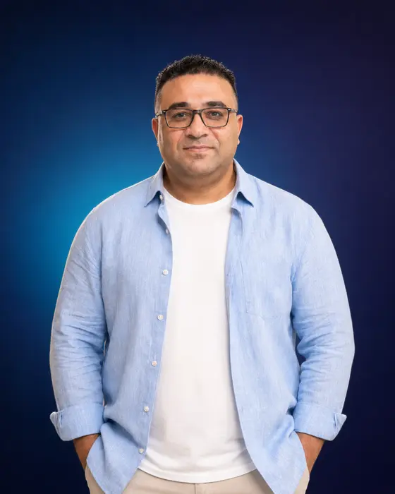
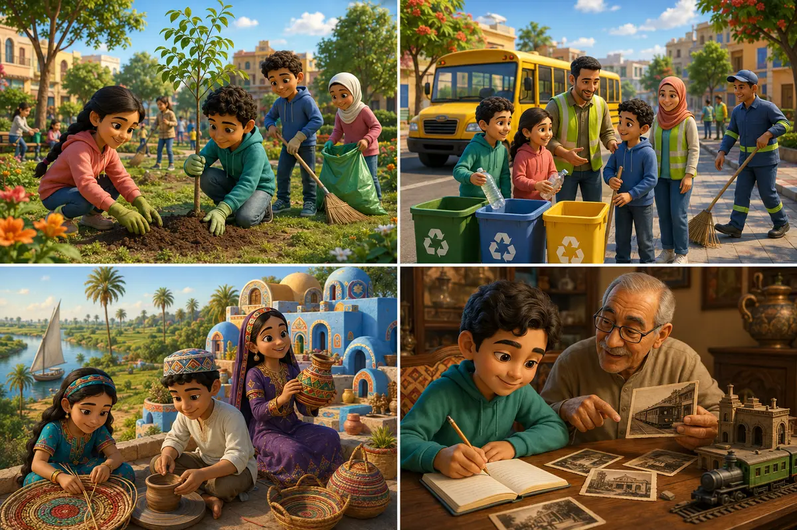

<!DOCTYPE html>
<html lang="en" dir="ltr">
<head>
<meta charset="UTF-8" />
<meta name="viewport" content="width=device-width, initial-scale=1.0" />
<title>English Primary 4 Term 1 — Resume Progress v9</title>
<style>
:root{--pink:#ff4d8d;--blue:#3185fc;--cyan:#21c7d9;--green:#2ec66d;--yellow:#ffd43b;--purple:#7c5cff;--orange:#ff8a34;--ink:#20304f;--soft:#f5f8ff;--card:#fff;--danger:#ff5d6c;--shadow:0 16px 40px rgba(54,75,125,.16)}
*{box-sizing:border-box}html{scroll-behavior:smooth}body{margin:0;font-family:"Trebuchet MS","Comic Sans MS",system-ui,sans-serif;color:var(--ink);background:radial-gradient(circle at 10% 10%,#fff7c7 0 12%,transparent 28%),radial-gradient(circle at 90% 5%,#dff5ff 0 14%,transparent 32%),linear-gradient(135deg,#f7fbff,#fff7fd);min-height:100vh}
button,input{font:inherit}button{cursor:pointer}.hidden{display:none!important}.screen{min-height:100vh}.shell{max-width:1180px;margin:auto;padding:22px}.glass{background:rgba(255,255,255,.86);backdrop-filter:blur(14px);border:1px solid rgba(255,255,255,.85);box-shadow:var(--shadow);border-radius:28px}.rainbow{background:linear-gradient(90deg,var(--pink),var(--orange),#e5b500,var(--green),var(--blue),var(--purple));-webkit-background-clip:text;background-clip:text;color:transparent}.muted{color:#687592}.course-header{position:sticky;top:0;z-index:35;display:flex;align-items:center;justify-content:space-between;gap:18px;min-height:62px;padding:11px clamp(15px,4vw,42px);background:linear-gradient(110deg,rgba(255,255,255,.97),rgba(240,247,255,.97),rgba(255,242,249,.97));border-bottom:2px solid rgba(124,92,255,.13);box-shadow:0 8px 22px rgba(49,78,145,.12);backdrop-filter:blur(14px)}.course-header .teacher-signature,.course-header .course-name{font-weight:1000;letter-spacing:.35px;line-height:1.2;text-shadow:0 3px 10px rgba(51,64,110,.12)}.course-header .teacher-signature{font-size:clamp(1rem,2.4vw,1.38rem);background:linear-gradient(90deg,var(--pink),var(--purple));-webkit-background-clip:text;background-clip:text;color:transparent}.course-header .course-name{font-size:clamp(1rem,2.5vw,1.42rem);text-align:right;background:linear-gradient(90deg,var(--blue),var(--cyan),var(--green));-webkit-background-clip:text;background-clip:text;color:transparent}
.teacher-info{display:flex;align-items:center;gap:10px;flex-wrap:wrap}
.who-am-i-btn{position:relative;border:0;border-radius:999px;padding:8px 13px;font-weight:1000;
font-size:.84rem;color:#fff;background:linear-gradient(135deg,var(--purple),var(--pink),var(--orange));
box-shadow:0 7px 18px rgba(124,92,255,.28);transition:transform .2s ease,box-shadow .2s ease;
white-space:nowrap;overflow:hidden}
.who-am-i-btn::after{content:"";position:absolute;inset:-2px;transform:translateX(-120%);
background:linear-gradient(100deg,transparent,rgba(255,255,255,.55),transparent);transition:.55s}
.who-am-i-btn:hover,.who-am-i-btn:focus-visible{transform:translateY(-2px) scale(1.03);
box-shadow:0 10px 24px rgba(255,77,109,.32);outline:3px solid rgba(51,154,240,.22)}
.who-am-i-btn:hover::after{transform:translateX(120%)}
body.modal-open{overflow:hidden}
.teacher-modal{position:fixed;inset:0;z-index:1000;display:grid;place-items:center;padding:18px;
background:radial-gradient(circle at 20% 20%,rgba(124,92,255,.35),transparent 36%),
radial-gradient(circle at 80% 80%,rgba(255,77,109,.28),transparent 38%),rgba(20,29,61,.78);
backdrop-filter:blur(9px);animation:teacherFade .25s ease}
.teacher-profile-card{position:relative;width:min(720px,96vw);max-height:90vh;overflow:auto;
border-radius:30px;padding:0;background:linear-gradient(135deg,#fff,#f7faff 55%,#fff4fa);
box-shadow:0 28px 80px rgba(8,18,50,.38);border:1px solid rgba(255,255,255,.92);
animation:teacherPop .32s cubic-bezier(.18,.9,.25,1.15)}
.teacher-profile-top{position:relative;padding:34px 28px 28px;text-align:center;color:#fff;
background:linear-gradient(125deg,#6d5dfc,#2f9cf4 52%,#ff5c8a);overflow:hidden}
.teacher-profile-top::before,.teacher-profile-top::after{content:"";position:absolute;border-radius:50%;
background:rgba(255,255,255,.14)}
.teacher-profile-top::before{width:150px;height:150px;left:-45px;top:-65px}
.teacher-profile-top::after{width:190px;height:190px;right:-70px;bottom:-105px}
.teacher-avatar{position:relative;z-index:1;width:92px;height:92px;margin:0 auto 13px;border-radius:50%;
display:grid;place-items:center;font-size:2rem;font-weight:1000;letter-spacing:1px;color:#674df4;
background:linear-gradient(145deg,#fff,#eef3ff);border:5px solid rgba(255,255,255,.75);
box-shadow:0 13px 28px rgba(21,38,88,.28);overflow:hidden}.teacher-avatar img{width:100%;height:100%;object-fit:cover;object-position:center 18%;transform:scale(1.28)}
.teacher-profile-top h2{position:relative;z-index:1;margin:0;font-size:clamp(1.6rem,4vw,2.3rem)}
.teacher-profile-role{position:relative;z-index:1;margin:7px 0 0;font-weight:900;opacity:.96}
.teacher-close{position:absolute;z-index:5;top:14px;right:14px;width:42px;height:42px;border:0;
border-radius:50%;font-size:1.25rem;font-weight:1000;color:#293759;background:rgba(255,255,255,.92);
box-shadow:0 7px 20px rgba(20,30,70,.2);transition:.2s}
.teacher-close:hover,.teacher-close:focus-visible{transform:rotate(8deg) scale(1.08);
background:#fff;outline:3px solid rgba(255,255,255,.4)}
.teacher-profile-body{padding:27px}
.teacher-intro{margin:0 0 20px;text-align:center;color:#53607c;font-size:1.03rem;line-height:1.75}
.teacher-facts{display:grid;grid-template-columns:repeat(2,minmax(0,1fr));gap:13px}
.teacher-fact{display:flex;gap:12px;align-items:flex-start;padding:16px;border-radius:19px;
background:rgba(255,255,255,.9);border:1px solid #e8edff;box-shadow:0 8px 20px rgba(49,71,130,.08)}
.teacher-fact-icon{flex:0 0 43px;width:43px;height:43px;display:grid;place-items:center;border-radius:14px;
font-size:1.25rem;background:linear-gradient(145deg,#edf4ff,#fff0f6)}
.teacher-fact h3{margin:0 0 4px;font-size:.98rem;color:#334267}
.teacher-fact p{margin:0;color:#687592;line-height:1.55;font-size:.92rem}
.teacher-mission{margin-top:18px;padding:18px 20px;border-radius:20px;text-align:center;font-weight:900;
line-height:1.65;color:#354466;background:linear-gradient(100deg,#fff2c7,#e8f8ff,#f6eaff);
border:1px solid rgba(124,92,255,.12)}
.teacher-tags{display:flex;justify-content:center;gap:8px;flex-wrap:wrap;margin-top:17px}

.resume-btn{background:linear-gradient(135deg,#19b6c9,#4776ef,#7c5cff)!important;
box-shadow:0 12px 26px rgba(71,118,239,.28)!important;animation:resumePulse 2.2s ease-in-out infinite}
.resume-btn:disabled{animation:none}
.resume-note{margin-top:12px;padding:12px 15px;border-radius:16px;font-weight:900;color:#34506f;
background:linear-gradient(100deg,#e8fbff,#eef0ff,#fff0fa);border:1px solid rgba(71,118,239,.18)}
.resume-chip{display:inline-flex;align-items:center;gap:6px;margin-left:8px;padding:6px 10px;border-radius:999px;
font-size:.78rem;font-weight:1000;color:#315783;background:#e9f7ff;border:1px solid #c9eaff}
@keyframes resumePulse{0%,100%{transform:translateY(0);box-shadow:0 12px 26px rgba(71,118,239,.28)}
50%{transform:translateY(-2px);box-shadow:0 16px 32px rgba(124,92,255,.36)}}
.teacher-tag{padding:8px 12px;border-radius:999px;font-size:.82rem;font-weight:900;color:#495675;
background:#f0f3ff;border:1px solid #e0e6ff}
.teacher-modal-footer{text-align:center;padding:0 27px 27px}
.teacher-modal-footer .primary{min-width:150px}
@keyframes teacherFade{from{opacity:0}to{opacity:1}}
@keyframes teacherPop{from{opacity:0;transform:translateY(24px) scale(.94)}
to{opacity:1;transform:translateY(0) scale(1)}}
.topbar{position:sticky;top:62px;z-index:20;display:flex;align-items:center;gap:12px;padding:12px 18px;background:rgba(255,255,255,.92);backdrop-filter:blur(12px);box-shadow:0 6px 20px rgba(52,71,116,.12)}.topbar .brand{font-weight:900;font-size:1.05rem;margin-right:auto}.pill{display:inline-flex;align-items:center;gap:6px;padding:8px 12px;border-radius:999px;background:#eef3ff;font-weight:800}.icon-btn{border:0;background:#fff;border-radius:14px;padding:10px 12px;box-shadow:0 5px 14px rgba(50,70,120,.13)}.portal-btn{border:0;border-radius:14px;padding:10px 13px;color:#fff;background:linear-gradient(135deg,#315efb,#7c5cff);box-shadow:0 8px 18px rgba(71,83,210,.24);font-weight:1000;white-space:nowrap}
#landing{display:grid;place-items:center;padding:28px;overflow:hidden;position:relative}.orb{position:absolute;border-radius:50%;filter:blur(1px);opacity:.6;animation:float 6s ease-in-out infinite}.orb.a{width:260px;height:260px;background:#ffd4e6;left:-70px;top:12%}.orb.b{width:310px;height:310px;background:#cdefff;right:-90px;bottom:5%;animation-delay:-2s}.landing-card{width:min(930px,96vw);padding:38px;text-align:center;position:relative;overflow:hidden}.hero-icons{font-size:3.1rem;letter-spacing:14px;filter:drop-shadow(0 8px 8px rgba(25,50,100,.18));animation:bob 3s ease-in-out infinite}.landing-card h1{font-size:clamp(2.2rem,7vw,5.2rem);line-height:1;margin:18px 0 8px;font-weight:1000}.landing-card h2{font-size:clamp(1rem,2.8vw,1.55rem);margin:0 0 28px;color:#4b5b80}.form-grid{display:grid;grid-template-columns:1fr 1fr;gap:14px;max-width:700px;margin:0 auto 16px}.input-wrap{text-align:left}.input-wrap label{display:block;font-weight:900;margin:0 0 7px}.input-wrap input{width:100%;padding:15px 17px;border:2px solid #dfe7ff;border-radius:16px;outline:none;background:#fff}.input-wrap input:focus{border-color:var(--blue);box-shadow:0 0 0 4px #3185fc20}.avatars{display:flex;justify-content:center;gap:10px;flex-wrap:wrap;margin:10px 0 24px}.avatar{font-size:2rem;border:3px solid transparent;border-radius:18px;background:#fff;padding:8px 12px;box-shadow:0 5px 14px rgba(60,70,120,.12)}.avatar.selected{border-color:var(--pink);transform:translateY(-4px);background:#fff1f7}.primary{border:0;color:#fff;background:linear-gradient(135deg,var(--pink),var(--purple));padding:15px 26px;border-radius:18px;font-weight:1000;box-shadow:0 10px 22px #7c5cff45;transition:.2s}.primary:hover{transform:translateY(-2px) scale(1.01)}.secondary{border:0;background:#eef3ff;color:#33466d;padding:12px 18px;border-radius:16px;font-weight:900}.danger{background:#fff0f2;color:#d93048;border:0;padding:10px 14px;border-radius:14px;font-weight:900}
.page-title{display:flex;align-items:center;gap:14px;margin:22px 0}.page-title .big-icon{font-size:3rem}.page-title h1{margin:0;font-size:clamp(2rem,4vw,3.3rem)}.unit-grid{display:grid;grid-template-columns:repeat(auto-fit,minmax(280px,1fr));gap:20px}.unit-card{padding:22px;position:relative;overflow:hidden;border:0;text-align:left;transition:.25s;min-height:250px}.unit-card:hover:not(.locked){transform:translateY(-7px);box-shadow:0 22px 50px rgba(55,74,130,.22)}.unit-card::after{content:"";position:absolute;width:180px;height:180px;border-radius:50%;right:-55px;top:-55px;background:var(--unitColor);opacity:.13}.unit-card .uicon{font-size:3.5rem}.unit-card h2{font-size:1.7rem;margin:10px 0 5px}.unit-card .number{position:absolute;right:18px;top:18px;font-weight:1000;font-size:1.4rem;color:var(--unitColor)}.unit-card.locked{filter:grayscale(.75);opacity:.62}.unit-card.locked:hover{animation:shake .35s}.progress-track{height:12px;background:#e9eef8;border-radius:999px;overflow:hidden}.progress-fill{height:100%;background:linear-gradient(90deg,var(--green),var(--cyan));border-radius:999px;transition:.4s}.tag-row{display:flex;gap:7px;flex-wrap:wrap}.tag{padding:6px 9px;border-radius:999px;background:#f0f4ff;font-size:.84rem;font-weight:800}.lesson-grid{display:grid;grid-template-columns:repeat(auto-fit,minmax(255px,1fr));gap:16px}.lesson-card{padding:20px;position:relative;transition:.2s;border:2px solid transparent}.lesson-card:hover:not(.locked){transform:translateY(-5px);border-color:#b9d6ff}.lesson-card.locked{opacity:.55;filter:grayscale(.6)}.lesson-card .step{font-weight:1000;color:var(--blue)}.lesson-card h3{font-size:1.3rem;margin:9px 0}.unit-hero{padding:24px;margin-bottom:20px;display:flex;gap:20px;align-items:center;background:linear-gradient(135deg,#ffffffea,#f3f7ffea)}.unit-hero .uicon{font-size:5rem}.unit-hero h1{margin:0;font-size:clamp(2rem,5vw,3.5rem)}
.lesson-view{padding-bottom:60px}.lesson-head{padding:22px;margin:20px 0}.lesson-head h1{margin:3px 0}.tabs{display:flex;gap:9px;overflow:auto;padding:4px 2px 12px}.tab{white-space:nowrap;border:0;padding:11px 16px;border-radius:14px;background:#eef3ff;font-weight:900}.tab.active{background:linear-gradient(135deg,var(--blue),var(--purple));color:#fff}.panel{padding:22px}.vocab-grid{display:grid;grid-template-columns:repeat(auto-fit,minmax(215px,1fr));gap:15px}.vocab-card{padding:17px;border-radius:22px;background:linear-gradient(145deg,#fff,#f4f7ff);border:1px solid #e9edfa;box-shadow:0 8px 22px rgba(58,74,120,.08);position:relative}.vocab-card .art{height:100px;display:grid;place-items:center;font-size:4rem;border-radius:18px;background:linear-gradient(145deg,#fff8d7,#e2f3ff);margin-bottom:12px}.vocab-card h3{margin:0;color:var(--pink);font-size:1.35rem}.vocab-card p{margin:7px 0}.speak{position:absolute;right:12px;top:12px;border:0;border-radius:12px;background:#fff;padding:8px}.note-card{padding:15px 17px;border-left:6px solid var(--blue);background:#f5f8ff;border-radius:14px;margin:10px 0}.summary-list{display:grid;gap:10px}.summary-item{display:flex;gap:12px;padding:13px;border-radius:15px;background:#fff9e4}.grammar-box{padding:22px;background:linear-gradient(145deg,#eefcff,#fff3fb);border-radius:22px;border:2px dashed #89c8ff}.grammar-box h2{color:var(--purple)}.example{padding:10px 13px;border-radius:12px;background:#fff;margin:7px 0}.mistake{background:#fff0f2;border-left:5px solid var(--danger)}.action-row{display:flex;gap:10px;flex-wrap:wrap;margin-top:18px}.big-action{flex:1;min-width:220px;padding:16px;border:0;border-radius:18px;font-weight:1000;color:#fff;background:linear-gradient(135deg,var(--blue),var(--cyan));box-shadow:0 9px 20px #3185fc35}.big-action.grammar{background:linear-gradient(135deg,var(--purple),var(--pink))}.big-action.bank{background:linear-gradient(135deg,var(--orange),#ffbd2e)}.big-action:disabled,.primary:disabled,.secondary:disabled{cursor:not-allowed;transform:none!important;box-shadow:none;opacity:.82}.big-action.finished-btn{background:linear-gradient(135deg,#198754,#35c56f);color:#fff;border:2px solid #b9f3cf;position:relative;overflow:hidden}.big-action.finished-btn::after{content:"FINISHED";position:absolute;right:-31px;top:12px;transform:rotate(35deg);background:#fff;color:#16844d;padding:4px 36px;font-size:.68rem;letter-spacing:1px;box-shadow:0 3px 10px rgba(0,0,0,.12)}.finished-note{padding:12px 15px;border-radius:15px;background:#eafff1;border-left:6px solid var(--green);font-weight:900;color:#17683a;margin-top:14px}.attempt-note{padding:12px 15px;border-radius:15px;background:#fff9df;border-left:6px solid var(--yellow);font-weight:800;color:#6d5712;margin-top:14px}
.quiz-wrap{max-width:850px;margin:24px auto;padding:24px}.quiz-top{display:flex;align-items:center;gap:12px;flex-wrap:wrap}.quiz-top h2{margin:0 auto 0 0}.question-card{padding:24px;margin-top:18px;border-radius:24px;background:#fff;box-shadow:0 13px 32px rgba(48,67,110,.14);animation:pop .3s ease}.skill-label{display:inline-flex;padding:7px 10px;border-radius:999px;background:#e9f3ff;color:#2563b5;font-weight:900}.question-text{font-size:clamp(1.35rem,3vw,2rem);font-weight:1000;line-height:1.35;margin:18px 0}.options{display:grid;grid-template-columns:repeat(2,minmax(0,1fr));gap:12px}.option{border:2px solid #e5eaf7;background:#fff;padding:15px;border-radius:16px;font-weight:900;text-align:left;transition:.18s}.option:hover:not(:disabled){transform:translateY(-2px);border-color:var(--blue);background:#f3f8ff}.option.correct{background:#e8fff0;border-color:var(--green);color:#17683a}.option.wrong{background:#fff0f2;border-color:var(--danger);color:#a52b3c}.option:disabled{cursor:default}.feedback{min-height:55px;margin-top:15px;padding:12px 15px;border-radius:14px;font-weight:1000;font-size:1.15rem}.feedback.good{background:#e8fff0;color:#17683a}.feedback.bad{background:#fff0f2;color:#a52b3c}.got-it-wrap{display:flex;justify-content:center;margin-top:18px}.answer-reveal{margin-top:4px;padding:16px;border:3px solid #ff8fa3;border-radius:18px;background:linear-gradient(135deg,#fff7f8,#fff1f4);box-shadow:0 12px 28px rgba(219,55,85,.14);text-align:center}.answer-reveal strong{display:inline-block;margin-top:7px;padding:8px 13px;border-radius:12px;background:#e8fff0;color:#17683a;font-size:1.22rem}.answer-reveal .wait-note{display:block;margin-top:10px;color:#7d3441;font-size:.98rem}.got-it-btn{min-width:190px;padding:15px 28px;border:0;border-radius:17px;background:linear-gradient(135deg,var(--purple),var(--blue));color:#fff;font-size:1.15rem;font-weight:1000;box-shadow:0 10px 25px rgba(91,84,217,.3);animation:pop .28s ease}.got-it-btn:hover{transform:translateY(-2px);filter:brightness(1.05)}.got-it-btn:active{transform:scale(.97)}.answer-input{width:100%;padding:15px;border:2px solid #dfe6f7;border-radius:15px;font-size:1.15rem}.order-bank,.order-answer{display:flex;gap:9px;flex-wrap:wrap;min-height:60px;padding:10px;border-radius:15px;background:#f5f8ff;margin:10px 0}.token{border:0;padding:10px 13px;border-radius:12px;background:#fff;box-shadow:0 4px 12px rgba(50,70,110,.12);font-weight:900}.result{text-align:center;padding:30px}.result .trophy{font-size:6rem;animation:bob 2s infinite}.stars{font-size:2.1rem;letter-spacing:4px}.certificate{padding:40px;text-align:center;background:#fff;border:12px double #e9b949;position:relative}.certificate h1{font-family:Georgia,serif;color:#b07b13;font-size:3rem}.certificate .name{font-size:2.4rem;color:var(--purple);font-weight:1000;border-bottom:2px solid #c7af72;display:inline-block;padding:5px 30px}.modal{position:fixed;inset:0;background:#1b274ecb;display:grid;place-items:center;padding:18px;z-index:100}.modal-card{max-width:900px;width:100%;max-height:90vh;overflow:auto;padding:24px}.close{float:right;border:0;background:#eef3ff;border-radius:12px;padding:9px 12px}.confetti{position:fixed;top:-20px;width:12px;height:18px;z-index:200;animation:fall 2.3s linear forwards}.toast{position:fixed;left:50%;bottom:28px;transform:translateX(-50%);padding:13px 20px;border-radius:999px;background:#263759;color:#fff;font-weight:900;z-index:300;box-shadow:var(--shadow)}

/* Premium APP 2 dashboard and cover system */
body{background:radial-gradient(circle at 7% 7%,#dcf8ff 0 10%,transparent 29%),radial-gradient(circle at 94% 4%,#ffe4f0 0 11%,transparent 30%),linear-gradient(145deg,#edf4ff,#fff8fd 55%,#f5f0ff)}
.nav-menu{display:none;border:0;border-radius:14px;padding:10px 12px;color:#fff;background:linear-gradient(135deg,#173f9f,#6d5cff);font-weight:1000}.app-frame{max-width:1500px;margin:auto;display:grid;grid-template-columns:280px minmax(0,1fr);gap:22px;padding:20px}.app-frame>.shell{width:100%;max-width:none;padding:0 0 36px}.learning-sidebar{position:sticky;top:138px;align-self:start;max-height:calc(100vh - 158px);overflow:auto;padding:16px;border:1px solid rgba(255,255,255,.9);border-radius:27px;background:linear-gradient(155deg,rgba(18,42,102,.96),rgba(66,54,153,.94));box-shadow:0 22px 55px rgba(26,43,103,.22);color:#fff}.sidebar-title{padding:8px 8px 15px}.sidebar-title small{display:block;color:#9ce9ff;font-weight:1000;letter-spacing:1.4px}.sidebar-title strong{display:block;margin-top:3px;font-size:1.2rem}.unit-nav{display:grid;gap:8px}.unit-nav-btn{display:grid;grid-template-columns:43px 1fr auto;align-items:center;gap:10px;width:100%;padding:9px;border:1px solid rgba(255,255,255,.12);border-radius:17px;text-align:left;color:#fff;background:rgba(255,255,255,.08);transition:.2s}.unit-nav-btn img{width:43px;height:43px;border-radius:13px;object-fit:cover}.unit-nav-btn span{font-weight:1000;line-height:1.15}.unit-nav-btn small{display:block;margin-top:3px;color:#cbd6ff;font-size:.7rem}.unit-nav-btn.active,.unit-nav-btn:hover:not(.locked){background:rgba(255,255,255,.2);transform:translateX(3px)}.unit-nav-btn.locked{opacity:.5}.sidebar-portal{width:100%;margin-top:13px;border:0;border-radius:16px;padding:12px;color:#273466;background:#fff;font-weight:1000}.premium-dashboard-hero{position:relative;min-height:280px;display:flex;align-items:flex-end;padding:34px;border-radius:32px;overflow:hidden;background:linear-gradient(90deg,rgba(12,28,78,.9),rgba(28,56,132,.48),rgba(28,56,132,.06)),url('u1.webp') center/cover;box-shadow:0 23px 58px rgba(33,54,116,.23);color:#fff}.premium-dashboard-hero::after{content:"";position:absolute;inset:0;background:linear-gradient(0deg,rgba(7,21,60,.38),transparent 55%)}.dashboard-hero-copy{position:relative;z-index:1;max-width:650px}.dashboard-kicker{font-size:.72rem;font-weight:1000;letter-spacing:1.8px;color:#9beeff}.premium-dashboard-hero h1{margin:7px 0 4px;font-size:clamp(2rem,5vw,4.1rem);line-height:.95}.premium-dashboard-hero p{margin:0;font-size:1.05rem;font-weight:900}.dashboard-stats{position:relative;z-index:1;display:flex;gap:8px;flex-wrap:wrap;margin-top:17px}.dashboard-stats span{padding:8px 11px;border:1px solid rgba(255,255,255,.28);border-radius:999px;background:rgba(255,255,255,.15);backdrop-filter:blur(9px);font-weight:1000;font-size:.8rem}.section-title{display:flex;align-items:end;justify-content:space-between;gap:14px;margin:27px 3px 14px}.section-title h2{margin:0;font-size:clamp(1.7rem,3vw,2.4rem)}.unit-grid{grid-template-columns:repeat(auto-fit,minmax(290px,1fr))}.unit-card{padding:0;min-height:360px;overflow:hidden;background:rgba(255,255,255,.9)}.unit-card-cover{position:relative;height:190px;overflow:hidden;background:#dbe8ff}.unit-card-cover img{width:100%;height:100%;object-fit:cover;transition:.45s}.unit-card:hover:not(.locked) .unit-card-cover img{transform:scale(1.065)}.unit-card .number{z-index:2;top:14px;right:14px;padding:7px 10px;border-radius:999px;color:#fff;background:rgba(14,32,83,.78);backdrop-filter:blur(8px);font-size:.78rem}.unit-card-lock{position:absolute;z-index:2;left:14px;bottom:13px;padding:7px 10px;border-radius:999px;color:#fff;background:rgba(16,29,65,.72);font-weight:1000;font-size:.75rem}.unit-card-body{padding:19px 20px 20px}.unit-card-body h2{margin:0 0 5px}.unit-card-body p{line-height:1.5}.lesson-grid{grid-template-columns:repeat(auto-fit,minmax(265px,1fr))}.lesson-card{padding:0;overflow:hidden;text-align:left;background:rgba(255,255,255,.92)}.lesson-cover{height:155px;position:relative;overflow:hidden}.lesson-cover img{width:100%;height:100%;object-fit:cover;transition:.4s}.lesson-card:hover:not(.locked) .lesson-cover img{transform:scale(1.07)}.lesson-cover .step{position:absolute;left:12px;top:12px;padding:6px 9px;border-radius:999px;color:#fff;background:rgba(20,39,92,.78);backdrop-filter:blur(8px);font-size:.7rem}.lesson-card-body{padding:17px 18px 18px}.lesson-card-body h3{margin:0 0 5px}.unit-hero{position:relative;min-height:250px;align-items:flex-end;overflow:hidden;color:#fff;background:#1c397d}.unit-hero-cover{position:absolute;inset:0;width:100%;height:100%;object-fit:cover}.unit-hero::after{content:"";position:absolute;inset:0;background:linear-gradient(90deg,rgba(9,25,67,.9),rgba(23,46,103,.45),rgba(23,46,103,.08))}.unit-hero-copy{position:relative;z-index:1;max-width:700px}.unit-hero .muted{color:#b9efff}.unit-hero .rainbow{-webkit-text-fill-color:#fff;color:#fff}.lesson-head{position:relative;min-height:230px;display:flex;align-items:flex-end;overflow:hidden;color:#fff;background:#213d82}.lesson-head-cover{position:absolute;inset:0;width:100%;height:100%;object-fit:cover}.lesson-head::after{content:"";position:absolute;inset:0;background:linear-gradient(90deg,rgba(9,24,64,.92),rgba(25,46,103,.46),rgba(25,46,103,.1))}.lesson-head-copy{position:relative;z-index:1;max-width:720px}.lesson-head .muted{color:#aeefff}.lesson-head .rainbow{-webkit-text-fill-color:#fff;color:#fff}.sidebar-backdrop{display:none}
@keyframes float{50%{transform:translateY(-25px)}}@keyframes bob{50%{transform:translateY(-8px) rotate(2deg)}}@keyframes pop{from{transform:scale(.96);opacity:.3}to{transform:scale(1);opacity:1}}@keyframes shake{25%{transform:translateX(-5px)}50%{transform:translateX(5px)}75%{transform:translateX(-3px)}}@keyframes fall{to{transform:translateY(110vh) rotate(720deg);opacity:.7}}@media(max-width:700px){.course-header{min-height:56px;padding:9px 12px;gap:8px}.course-header .teacher-signature,.course-header .course-name{font-size:.82rem}.teacher-info{gap:6px;flex-wrap:nowrap}.who-am-i-btn{padding:6px 9px;font-size:.72rem}.teacher-facts{grid-template-columns:1fr}.teacher-profile-body{padding:20px}.teacher-profile-top{padding:30px 19px 24px}.teacher-profile-card{border-radius:24px}.topbar{top:56px}.form-grid{grid-template-columns:1fr}.landing-card{padding:25px 17px}.options{grid-template-columns:1fr}.topbar{gap:6px;padding:9px 8px;overflow-x:auto}.topbar .brand{display:none}.portal-btn{padding:8px 10px;font-size:.78rem}.pill{padding:7px 8px;font-size:.8rem}.unit-hero{align-items:flex-start}.unit-hero .uicon{font-size:3rem}.shell{padding:14px}.panel{padding:16px}}
@media(max-width:900px){.nav-menu{display:inline-block}.app-frame{display:block;padding:12px}.learning-sidebar{position:fixed;z-index:80;left:10px;top:10px;bottom:10px;width:min(300px,86vw);max-height:none;transform:translateX(-115%);transition:.28s}.learning-sidebar.open{transform:translateX(0)}.sidebar-backdrop{display:block;position:fixed;z-index:75;inset:0;border:0;background:rgba(12,23,56,.58);backdrop-filter:blur(4px)}.premium-dashboard-hero{min-height:310px;padding:25px 21px}.unit-grid{grid-template-columns:1fr}.unit-card{min-height:0}.lesson-grid{grid-template-columns:1fr}.lesson-card{display:grid;grid-template-columns:42% 1fr}.lesson-cover{height:100%;min-height:175px}.unit-hero,.lesson-head{min-height:260px;padding:24px 20px}.course-header{position:relative}.topbar{top:0}.topbar .pill:nth-of-type(3),.topbar .pill:nth-of-type(4){display:none}}
@media(prefers-reduced-motion:reduce){*,*::before,*::after{animation:none!important;transition:none!important;scroll-behavior:auto!important}}
@media print{body{background:#fff}.topbar,.no-print{display:none!important}.certificate{box-shadow:none;margin:0}.modal{position:static;background:#fff;padding:0}.modal-card{max-height:none;box-shadow:none}}
.unit-card{display:block;width:100%}.unit-card-cover,.unit-card-body,.lesson-cover,.lesson-card-body,.progress-track{display:block}
</style>
<link rel="stylesheet" href="question-system-v2.css?v=20260722">
</head>
<body>
<div id="app"></div>
<script src="https://cdn.jsdelivr.net/npm/@supabase/supabase-js@2"></script>
<script src="question-bank-v2.js?v=20260722"></script>
<script>
const CURRICULUM={"book":{"title":"English Primary 4 Term 1","subtitle":"Prepared and designed by: Mr.Mohamed Farid","year":"2025/2026"},"units":[{"id":"u1","number":1,"title":"The Five Senses","icon":"👁️","theme":"Senses, healthy habits, sharing, and daily routines","lifeSkills":["Personal hygiene","Healthy habits"],"values":["Responsibility","Kindness"],"lessons":[{"id":"u1l1","title":"What are the Five Senses?","kind":"Vocabulary & Dialogue","vocab":[{"word":"taste","meaning":"to know the flavor of food with the tongue","example":"I taste sweet fruit with my tongue.","icon":"👅"},{"word":"smell","meaning":"to notice a scent with the nose","example":"I smell flowers with my nose.","icon":"👃"},{"word":"see","meaning":"to use the eyes to look","example":"I see colors with my eyes.","icon":"👁️"},{"word":"hear","meaning":"to use the ears to listen","example":"I hear birds with my ears.","icon":"👂"},{"word":"touch","meaning":"to feel something with the hands","example":"I touch soft things with my hands.","icon":"✋"},{"word":"senses","meaning":"body abilities that help us understand the world","example":"We have five senses.","icon":"🧠"},{"word":"sight","meaning":"the sense of seeing","example":"Sight helps us see butterflies.","icon":"🦋"},{"word":"hearing","meaning":"the sense of hearing sounds","example":"Hearing helps us notice a loud noise.","icon":"🎵"}],"expressions":["How many senses do we have?","I see with my eyes.","I hear with my ears.","Senses help us stay safe."],"notes":["Use “I + sense verb + with my + body part.”","Smelling smoke can warn us about a fire."],"summary":{"title":"Let’s Talk About Our Senses","bullets":["Ms. Mona talks with Sami and Salma in the school garden.","Sami hears birds singing.","Salma smells flowers and sees butterflies.","The senses help us understand the world and stay safe."]},"facts":[{"text":"Ms. Mona and the students are in the school garden.","truth":true},{"text":"Sami can hear birds singing.","truth":true},{"text":"We use hearing to see butterflies.","truth":false},{"text":"Smelling smoke can warn us about fire.","truth":true}],"grammar":null,"pronunciation":null,"project":null},{"id":"u1l2","title":"Healthy Habits","kind":"Reading & Grammar","vocab":[{"word":"healthy","meaning":"good for the body and mind","example":"Healthy food helps us grow.","icon":"💚"},{"word":"habit","meaning":"something you do regularly","example":"Brushing teeth is a good habit.","icon":"🔁"},{"word":"energy","meaning":"power to move, learn, and play","example":"Breakfast gives Sarah energy.","icon":"⚡"},{"word":"breakfast","meaning":"the first meal of the day","example":"Sarah eats eggs for breakfast.","icon":"🍳"},{"word":"plenty of","meaning":"a large amount of","example":"She drinks plenty of water.","icon":"💧"},{"word":"vegetables","meaning":"healthy plants that we eat","example":"Vegetables give us vitamins.","icon":"🥦"},{"word":"fruits","meaning":"sweet foods that grow on plants","example":"Sarah eats fruits for dinner.","icon":"🍎"},{"word":"sweets","meaning":"food with a lot of sugar","example":"She does not eat too many sweets.","icon":"🍬"},{"word":"shower","meaning":"washing the whole body","example":"Sarah takes a shower in the evening.","icon":"🚿"},{"word":"sleep","meaning":"rest for the body and mind","example":"Good sleep keeps the mind sharp.","icon":"😴"},{"word":"sharp mind","meaning":"a mind that thinks clearly","example":"Enough sleep helps her mind stay sharp.","icon":"🧠"}],"expressions":["What healthy habits do you practice?","She wakes up early.","She drinks plenty of water.","She goes to bed early."],"notes":["Healthy routines include hygiene, exercise, nutritious food, water, and sleep.","Sequence words show the order of a routine."],"summary":{"title":"My Healthy Day","bullets":["Sarah wakes up at 6:00 and cleans her teeth and face.","She exercises and eats a healthy breakfast.","At school she drinks water and plays sports.","She helps her mother, eats fruit and vegetables, and sleeps early."]},"facts":[{"text":"Sarah wakes up early every day.","truth":true},{"text":"Sarah drinks coffee for breakfast.","truth":false},{"text":"She helps her mother in the garden.","truth":true},{"text":"She goes to bed at 8:30 p.m.","truth":true},{"text":"Healthy habits give Sarah energy.","truth":true}],"grammar":{"kind":"present_aff","title":"Present Simple Affirmative","explanation":"We use the present simple to talk about habits, routines, and facts.","rules":["Use the base verb with I, you, we, they and plural nouns.","Add -s, -es, or -ies with he, she, it and singular nouns.","Add -es after verbs ending in sh, ch, x, s, or o.","Change consonant + y to -ies."],"examples":["I play sports after school.","Sarah drinks plenty of water.","He brushes his teeth every day.","She studies English every day."],"mistakes":["She play football. → She plays football.","He brush his teeth. → He brushes his teeth."],"verbs":[{"base":"play","third":"plays"},{"base":"eat","third":"eats"},{"base":"drink","third":"drinks"},{"base":"brush","third":"brushes"},{"base":"wash","third":"washes"},{"base":"go","third":"goes"},{"base":"study","third":"studies"},{"base":"carry","third":"carries"},{"base":"help","third":"helps"},{"base":"take","third":"takes"},{"base":"read","third":"reads"},{"base":"watch","third":"watches"}]},"pronunciation":null,"project":null},{"id":"u1l3","title":"Story Time: Goha’s Great Meal","kind":"Story & Pronunciation","vocab":[{"word":"owner","meaning":"a person who has something","example":"The restaurant owner saw Goha.","icon":"👤"},{"word":"hungry","meaning":"needing or wanting food","example":"Goha was very hungry.","icon":"🍽️"},{"word":"greedy","meaning":"wanting more than is fair or needed","example":"The owner was greedy.","icon":"🤑"},{"word":"coin","meaning":"a small round piece of money","example":"Goha shook a few coins.","icon":"🪙"},{"word":"jingling","meaning":"making a light ringing sound","example":"The coins made a jingling sound.","icon":"🔔"},{"word":"share","meaning":"to give or use something with others","example":"They shared the soup.","icon":"🤝"},{"word":"delicious","meaning":"very pleasant to taste or smell","example":"The soup smelled delicious.","icon":"🥣"},{"word":"clever","meaning":"quick and smart at solving a problem","example":"Goha gave a clever answer.","icon":"💡"}],"expressions":["I’m enjoying the smell of your soup.","You must pay for it.","You can take the sound of my coins.","Good food tastes better when shared."],"notes":["A story has characters, a setting, a problem, a solution, and a moral.","The moral is the lesson we learn from a story."],"summary":{"title":"Goha’s Great Meal","bullets":["Goha is hungry but has no money.","A greedy owner asks him to pay for smelling soup.","Goha offers the sound of his coins as payment for the smell.","The owner laughs and invites Goha to share the soup.","The story teaches kindness and sharing."]},"facts":[{"text":"Goha had enough money to buy a meal.","truth":false},{"text":"The owner wanted payment for the smell.","truth":true},{"text":"Goha paid with the sound of his coins.","truth":true},{"text":"The story teaches us to be greedy.","truth":false}],"grammar":null,"pronunciation":{"focus":"Short and long vowel sounds","groups":{"short":["hat","pot","pen","cat","hot"],"long":["plate","home","feed","heat","bean"]}},"project":null},{"id":"u1l4","title":"Writing: My Healthy Life","kind":"Writing","vocab":[{"word":"routine","meaning":"things done regularly in the same order","example":"My morning routine starts early.","icon":"🗓️"},{"word":"first","meaning":"at the beginning","example":"First, I wake up.","icon":"1️⃣"},{"word":"next","meaning":"after the first action","example":"Next, I brush my teeth.","icon":"➡️"},{"word":"then","meaning":"after that","example":"Then, I eat breakfast.","icon":"⏭️"},{"word":"after that","meaning":"following the previous action","example":"After that, I do my homework.","icon":"🔜"},{"word":"finally","meaning":"at the end","example":"Finally, I go to bed.","icon":"🏁"},{"word":"healthy snack","meaning":"a small nutritious meal","example":"I eat fruit as a healthy snack.","icon":"🍌"}],"expressions":["Let me tell you about my healthy habits.","Every day, I follow the same routine.","First... Next... Then... Finally..."],"notes":["Use sequence words to put events in a clear order.","A paragraph needs a beginning, middle, and ending."],"summary":{"title":"My Healthy Life","bullets":["The writer explains a healthy day in order.","The routine includes hygiene, breakfast, school, homework, exercise, dinner, and sleep.","Sequence words make the order easy to follow."]},"facts":[{"text":"“First” is used for the final event.","truth":false},{"text":"“Finally” introduces the last step.","truth":true},{"text":"A daily routine is something we do regularly.","truth":true}],"grammar":null,"pronunciation":null,"project":null},{"id":"u1l5","title":"Think and Create: A Presentation","kind":"Project","vocab":[{"word":"presentation","meaning":"a talk that shares information","example":"Our presentation is about healthy food.","icon":"🎤"},{"word":"heading","meaning":"a title for a section","example":"Use a clear heading.","icon":"🏷️"},{"word":"feedback","meaning":"helpful comments about work","example":"My partner gives useful feedback.","icon":"💬"},{"word":"clearly","meaning":"in a way that is easy to understand","example":"Speak clearly and slowly.","icon":"🗣️"}],"expressions":["Use clear headings.","Add pictures.","Keep the text simple.","Speak clearly and slowly."],"notes":["A strong presentation has a clear topic, simple text, useful pictures, and confident speaking."],"summary":{"title":"Healthy Eating Presentation","bullets":["Plan a short presentation about healthy eating habits.","Use headings and pictures.","Speak for three to five minutes.","Give kind and useful feedback."]},"facts":[{"text":"A presentation should have a clear heading.","truth":true},{"text":"The speaker should talk as fast as possible.","truth":false},{"text":"Pictures can make ideas clearer.","truth":true}],"grammar":null,"pronunciation":null,"project":["Choose a healthy eating topic.","Write simple points under clear headings.","Add suitable pictures.","Practise speaking clearly.","Present and receive feedback."]}]},{"id":"u2","number":2,"title":"My Community","icon":"🏘️","theme":"Helping others, solving problems, culture, and community history","lifeSkills":["Community service","Problem solving"],"values":["Cultural identity","Belonging"],"lessons":[{"id":"u2l1","title":"Helping the Community","kind":"Vocabulary & Dialogue","vocab":[{"word":"collect","meaning":"to bring things together","example":"We collect plastic bottles.","icon":"♻️"},{"word":"plant","meaning":"to put a seed or young tree in soil","example":"We plant trees in the park.","icon":"🌱"},{"word":"clean","meaning":"to remove dirt or trash","example":"They clean the street.","icon":"🧹"},{"word":"help","meaning":"to do something useful for someone","example":"We help our neighbors.","icon":"🤲"},{"word":"feed","meaning":"to give food to a person or animal","example":"Adam feeds cats and dogs.","icon":"🐕"},{"word":"volunteer","meaning":"to work to help without payment","example":"She volunteers at the park.","icon":"🙋"},{"word":"community","meaning":"people who live in the same area","example":"We make our community better.","icon":"🏘️"},{"word":"neighbor","meaning":"a person who lives near you","example":"Our neighbor helps us.","icon":"🏠"}],"expressions":["How can we help others?","What do you do to help our community?","When we all help, we make our community great."],"notes":["Community service means giving time and effort to help people and places around us."],"summary":{"title":"Helping Hands","bullets":["Adam cleans streets with friends every Saturday.","He plants trees and feeds cats and dogs.","His sister helps neighbors and volunteers at the park.","Amira collects clothes for people who need them."]},"facts":[{"text":"Adam cleans the streets on Saturdays.","truth":true},{"text":"Amira throws clothes away.","truth":false},{"text":"Adam plants trees in the park.","truth":true},{"text":"Helping together improves a community.","truth":true}],"grammar":null,"pronunciation":null,"project":null},{"id":"u2l2","title":"Community Problems and Solutions","kind":"Reading & Grammar","vocab":[{"word":"problem","meaning":"something wrong that needs to be fixed","example":"Traffic is a community problem.","icon":"⚠️"},{"word":"solution","meaning":"a way to fix a problem","example":"The school bus is one solution.","icon":"✅"},{"word":"traffic","meaning":"many vehicles blocking or slowing roads","example":"Traffic is heavy near schools.","icon":"🚗"},{"word":"trash","meaning":"things people throw away","example":"Trash makes the street dirty.","icon":"🗑️"},{"word":"trash bin","meaning":"a container for rubbish","example":"Put trash in the bin.","icon":"🚮"},{"word":"ground","meaning":"the surface we walk on","example":"Do not throw trash on the ground.","icon":"🛣️"},{"word":"pollution","meaning":"harmful dirt in air, water, or land","example":"Trees help reduce air pollution.","icon":"🏭"},{"word":"school bus","meaning":"a bus that carries students","example":"We can take the school bus.","icon":"🚌"}],"expressions":["What is the best way to reduce traffic?","Let’s discuss solutions.","We can take the school bus instead.","Put bins everywhere."],"notes":["A problem tells what is wrong; a solution explains how to improve it.","Use don’t/doesn’t for negative present simple sentences."],"summary":{"title":"Ali and Mona Make a Difference","bullets":["Traffic is bad near schools because many cars use the road.","Using school buses can reduce the number of cars.","Trash on the ground makes streets dirty.","New bins and responsible neighbors keep the street clean."]},"facts":[{"text":"School buses can help reduce traffic.","truth":true},{"text":"Throwing trash on the ground keeps streets clean.","truth":false},{"text":"Ali’s street has new bins.","truth":true},{"text":"Community problems never have solutions.","truth":false}],"grammar":{"kind":"present_negq","title":"Present Simple Negative and Questions","explanation":"Use do/does for questions and don’t/doesn’t for negative sentences in the present simple.","rules":["I/you/we/they + don’t + base verb.","He/she/it + doesn’t + base verb.","Do + I/you/we/they + base verb?","Does + he/she/it + base verb?","After does/doesn’t, use the base verb."],"examples":["Cars don’t move quickly in the morning.","She doesn’t throw trash on the ground.","Do you volunteer in the park?","Does your street have new bins?"],"mistakes":["She don’t help. → She doesn’t help.","Does he takes the bus? → Does he take the bus?"],"verbs":["help","collect","plant","clean","feed","volunteer","use","throw","take","move","need","like"]},"pronunciation":null,"project":null},{"id":"u2l3","title":"Egypt: My Culture","kind":"Reading & Pronunciation","vocab":[{"word":"Delta","meaning":"the northern region around the Nile branches","example":"The Delta is in northern Egypt.","icon":"🌾"},{"word":"Upper Egypt","meaning":"the southern region of Egypt","example":"Upper Egypt is in the south.","icon":"🏜️"},{"word":"culture","meaning":"the traditions and way of life of a group","example":"Egyptians are proud of their culture.","icon":"🇪🇬"},{"word":"festival","meaning":"a special celebration","example":"Families enjoy the Spring Festival.","icon":"🎉"},{"word":"harvest","meaning":"the time when crops are collected","example":"People celebrate the sugar cane harvest.","icon":"🌾"},{"word":"sugar cane","meaning":"a tall plant used to make sugar","example":"Sugar cane grows in Upper Egypt.","icon":"🎋"},{"word":"turban","meaning":"a long cloth worn around the head","example":"Some men wear turbans.","icon":"🧕"},{"word":"Nubia","meaning":"a southern Egyptian region famous for colorful houses","example":"Nubian houses have bright designs.","icon":"🎨"},{"word":"pottery","meaning":"objects made from baked clay","example":"People make beautiful pottery.","icon":"🏺"},{"word":"crafts","meaning":"things made skillfully by hand","example":"The Delta has many crafts.","icon":"🧶"}],"expressions":["Which part of Egypt are you from?","Do you live in a city or a village?","Egyptians are proud of their culture."],"notes":["The Delta is in the north; Upper Egypt is in the south.","Prefixes dis-, il-, and ir- can make opposite meanings."],"summary":{"title":"Egypt: My Culture","bullets":["The Delta celebrates spring and grows rice and cotton.","Upper Egypt celebrates the sugar cane harvest.","Nubia is famous for colorful houses and special designs.","Both regions share traditions and pride in Egyptian culture."]},"facts":[{"text":"Upper Egypt is in the south.","truth":true},{"text":"Nubian houses are known for bright colors.","truth":true},{"text":"The Delta is famous only for sugar cane.","truth":false},{"text":"Egyptians are proud of their culture.","truth":true}],"grammar":null,"pronunciation":{"focus":"The sounds /f/ and /v/","groups":{"/f/":["fish","factory","forest","frog","flag"],"/v/":["van","violin","view","vest"]}},"project":null},{"id":"u2l4","title":"Writing: A Diary Entry","kind":"Writing","vocab":[{"word":"diary","meaning":"personal writing about your day and feelings","example":"Hana writes in her diary.","icon":"📔"},{"word":"history","meaning":"events from the past","example":"The neighborhood has a rich history.","icon":"🏛️"},{"word":"neighborhood","meaning":"the area where people live near one another","example":"Her neighborhood changed over time.","icon":"🏘️"},{"word":"market","meaning":"a place where people buy and sell things","example":"There was an old market.","icon":"🛍️"},{"word":"wooden stalls","meaning":"small market stands made of wood","example":"People sold fruit at wooden stalls.","icon":"🏚️"},{"word":"train station","meaning":"a place where trains stop","example":"There was a small train station.","icon":"🚉"},{"word":"proud","meaning":"happy because something is good or special","example":"Hana is proud of her community.","icon":"🌟"}],"expressions":["Dear diary,","Today, Grandpa told me...","Fifty years ago...","Yours truly,"],"notes":["A diary entry has a date, greeting, details, feelings, and a closing.","Use the first person: I, me, my."],"summary":{"title":"Hana’s Diary","bullets":["Grandpa tells Hana about the neighborhood fifty years ago.","There was an old market, small houses, gardens, and a train station.","The old school still stands today.","Hana feels proud of her community’s history."]},"facts":[{"text":"A diary entry starts with a date.","truth":true},{"text":"Hana learns about the future of her neighborhood.","truth":false},{"text":"The old school still stands.","truth":true}],"grammar":null,"pronunciation":null,"project":null},{"id":"u2l5","title":"Think and Create: A Poster","kind":"Project","vocab":[{"word":"poster","meaning":"a large page that shares a message","example":"The poster shows ways to stop pollution.","icon":"🪧"},{"word":"air pollution","meaning":"dirty or harmful air","example":"Trees help reduce air pollution.","icon":"🌫️"},{"word":"plastic","meaning":"a material used to make many objects","example":"Use less plastic.","icon":"🥤"},{"word":"cycle","meaning":"to ride a bicycle","example":"Cycle to school for short distances.","icon":"🚲"}],"expressions":["Let’s Stop Air Pollution.","Walk or cycle to school.","Use less plastic.","Plant trees in your community."],"notes":["A good poster has a clear title, pictures, and two or three practical solutions."],"summary":{"title":"Community Problem-Solution Poster","bullets":["Choose one community problem.","Find useful facts and solutions.","Design a clear poster with a title and pictures.","Share the poster with others."]},"facts":[{"text":"A good poster needs a clear title.","truth":true},{"text":"A poster should include no solutions.","truth":false},{"text":"Planting trees can improve air quality.","truth":true}],"grammar":null,"pronunciation":null,"project":["Choose a community problem.","Write two or three solutions.","Add a clear title.","Add drawings or pictures.","Check that the message is easy to understand."]}]},{"id":"u3","number":3,"title":"Animals in Our World","icon":"🦁","theme":"Animal habits, care, comparisons, moral stories, and endangered animals","lifeSkills":["Critical thinking","Environmental awareness"],"values":["Respect for life"],"lessons":[{"id":"u3l1","title":"Let’s Meet the Animals!","kind":"Vocabulary & Dialogue","vocab":[{"word":"lion","meaning":"a large wild cat with yellow fur","example":"Lions often hunt at night.","icon":"🦁"},{"word":"monkey","meaning":"an animal that climbs trees","example":"The monkey has a long tail.","icon":"🐒"},{"word":"elephant","meaning":"a very large gray animal with a trunk","example":"The elephant sprays water with its trunk.","icon":"🐘"},{"word":"giraffe","meaning":"a tall animal with a long neck","example":"The giraffe eats high leaves.","icon":"🦒"},{"word":"zebra","meaning":"an animal with black and white stripes","example":"Zebras run in groups.","icon":"🦓"},{"word":"bear","meaning":"a large animal with thick fur and claws","example":"The bear catches fish.","icon":"🐻"},{"word":"forest guide","meaning":"a person who shows visitors around a forest park","example":"Nadia’s father is a forest guide.","icon":"🧭"},{"word":"trunk","meaning":"the long nose of an elephant","example":"The elephant has a long trunk.","icon":"🐘"},{"word":"striped","meaning":"having lines of different colors","example":"A zebra has a striped coat.","icon":"🦓"},{"word":"spotted","meaning":"having many small marks","example":"A giraffe has a spotted coat.","icon":"🟤"}],"expressions":["What animals do visitors see?","Lions often hunt at night.","Would you like to visit the forest park?"],"notes":["Use action verbs to describe animal habits: climb, hunt, eat, run, catch.","Adjectives describe animal features: long, thick, striped, spotted."],"summary":{"title":"A Day at the Forest Park","bullets":["Nadia’s father works as a forest guide.","Visitors see elephants, monkeys, lions, and giraffes.","Lions hunt at night and sleep in the day.","Giraffes eat leaves from tall trees."]},"facts":[{"text":"Nadia’s father is a forest guide.","truth":true},{"text":"Lions often hunt in the morning.","truth":false},{"text":"Giraffes eat leaves from tall trees.","truth":true},{"text":"Zebras have spotted coats.","truth":false}],"grammar":null,"pronunciation":null,"project":null},{"id":"u3l2","title":"Taking Care of Animals","kind":"Reading & Grammar","vocab":[{"word":"vet","meaning":"a doctor for animals","example":"Vets check animals’ health.","icon":"🩺"},{"word":"owner","meaning":"a person who has a pet","example":"Pet owners give daily care.","icon":"👤"},{"word":"wild","meaning":"living freely in nature","example":"Wild animals need safe homes.","icon":"🌲"},{"word":"challenge","meaning":"a difficult problem","example":"Wild animals face many challenges.","icon":"🧩"},{"word":"safe","meaning":"protected from danger","example":"Animals need safe places.","icon":"🛡️"},{"word":"cage","meaning":"a home with bars for some animals","example":"Birds need clean cages.","icon":"🦜"},{"word":"forest officer","meaning":"a person who protects forests and animals","example":"Forest officers protect habitats.","icon":"👮"},{"word":"kindness","meaning":"caring and helpful behavior","example":"Kindness makes animals’ lives better.","icon":"💚"}],"expressions":["Animals need our help.","Vets check their health.","Forest officers protect animals and their homes.","Small acts of kindness make our world better."],"notes":["Different animals need different kinds of care.","Comparative adjectives compare two animals or things."],"summary":{"title":"Helping Animals","bullets":["Zoo animals need space, food, and health checks.","Wild animals need clean water and safe homes.","Forest officers protect animals and habitats.","Pets need daily food, exercise, clean homes, and vet care."]},"facts":[{"text":"Vets check animals’ health.","truth":true},{"text":"Wild animals need dirty water.","truth":false},{"text":"Pets need daily care.","truth":true},{"text":"Kindness can help animals.","truth":true}],"grammar":{"kind":"comparative","title":"Comparative Adjectives","explanation":"We use comparative adjectives to compare two people, animals, places, or things.","rules":["Add -er to most short adjectives.","Double the final consonant after one vowel: big → bigger.","Add -r when the adjective ends in e: safe → safer.","Change consonant + y to -ier: healthy → healthier.","Use than after the comparative adjective."],"examples":["An elephant is bigger than a monkey.","A giraffe is taller than a zebra.","A clean cage is safer than a dirty cage."],"mistakes":["more tall → taller","bigger that → bigger than"],"adjectives":[{"base":"big","form":"bigger"},{"base":"small","form":"smaller"},{"base":"tall","form":"taller"},{"base":"short","form":"shorter"},{"base":"safe","form":"safer"},{"base":"clean","form":"cleaner"},{"base":"healthy","form":"healthier"},{"base":"heavy","form":"heavier"},{"base":"fast","form":"faster"},{"base":"strong","form":"stronger"},{"base":"happy","form":"happier"},{"base":"large","form":"larger"}]},"pronunciation":null,"project":null},{"id":"u3l3","title":"Story Time: The Old Lion and the Fox","kind":"Story & Pronunciation","vocab":[{"word":"hunt","meaning":"to chase and catch animals for food","example":"The old lion could not hunt.","icon":"🏹"},{"word":"weak","meaning":"not strong","example":"The lion became weak.","icon":"🔋"},{"word":"trick","meaning":"a plan to fool someone","example":"The lion used a trick.","icon":"🎭"},{"word":"pretend","meaning":"to act as if something is true","example":"He pretended to be sick.","icon":"🤒"},{"word":"cave","meaning":"a large natural hole in rock","example":"The lion stayed in his cave.","icon":"🕳️"},{"word":"footprint","meaning":"a mark made by a foot","example":"The fox saw footprints.","icon":"🐾"},{"word":"wise","meaning":"able to make good decisions","example":"The fox was wise.","icon":"🦊"},{"word":"mistake","meaning":"an action that is not correct","example":"We can learn from mistakes.","icon":"❌"}],"expressions":["He couldn’t hunt anymore.","He pretended to be sick.","Many footprints were going in, but none came out.","I learn from the mistakes of others."],"notes":["A moral explains the lesson of a story.","Careful observation can keep us safe."],"summary":{"title":"The Old Lion and the Fox","bullets":["An old lion is too weak to hunt.","He pretends to be ill and invites animals into his cave.","A wise fox notices footprints going in but none coming out.","The fox stays outside and escapes.","The moral is to learn from the mistakes of others."]},"facts":[{"text":"The lion was too weak to hunt.","truth":true},{"text":"The fox entered the cave.","truth":false},{"text":"The footprints helped the fox understand the danger.","truth":true},{"text":"The moral is to repeat other people’s mistakes.","truth":false}],"grammar":null,"pronunciation":{"focus":"Consonant blends /fr/, /dr/, /pl/","groups":{"fr":["frown","fruit"],"dr":["drum","draw"],"pl":["plane","plant"]}},"project":null},{"id":"u3l4","title":"Writing: A Research Report","kind":"Writing","vocab":[{"word":"report","meaning":"organized factual writing","example":"The student writes a report about an animal.","icon":"📄"},{"word":"endangered","meaning":"in danger of disappearing","example":"The Arabian Leopard is endangered.","icon":"⚠️"},{"word":"species","meaning":"a group or kind of animal","example":"The dugong is an endangered species.","icon":"🐾"},{"word":"habitat","meaning":"the natural home of an animal","example":"Building can damage habitats.","icon":"🌿"},{"word":"pollution","meaning":"harmful dirt in nature","example":"Pollution harms sea animals.","icon":"🏭"},{"word":"fishing nets","meaning":"nets used to catch fish","example":"Dugongs can be hurt by fishing nets.","icon":"🎣"},{"word":"protect","meaning":"to keep safe","example":"We must protect animal homes.","icon":"🛡️"},{"word":"conclusion","meaning":"the final part of a report","example":"The conclusion explains what may happen.","icon":"🏁"}],"expressions":["Many animals are in danger of disappearing.","These animals are called endangered species.","If we don’t act now, they could disappear forever."],"notes":["A good report has a title, introduction, facts, examples, solutions, and conclusion.","Facts must be correct and clearly organized."],"summary":{"title":"Endangered Animals","bullets":["The Arabian Leopard has fewer than 200 animals remaining in the wild.","Its habitat is damaged when people build houses.","The Red Sea Dugong is harmed by pollution and fishing nets.","Protection, safe areas, and education can help."]},"facts":[{"text":"The Arabian Leopard is endangered.","truth":true},{"text":"Pollution is helpful to dugongs.","truth":false},{"text":"A report should include facts and solutions.","truth":true}],"grammar":null,"pronunciation":null,"project":null},{"id":"u3l5","title":"Think and Create: A Collage","kind":"Project","vocab":[{"word":"collage","meaning":"art made by joining pictures and materials","example":"We made an animal collage.","icon":"🖼️"},{"word":"cut out","meaning":"to remove a shape using scissors","example":"Cut out animal photos.","icon":"✂️"},{"word":"glue","meaning":"to stick things together","example":"Glue the pictures to paper.","icon":"🧴"},{"word":"overlap","meaning":"to cover part of another picture","example":"Some pictures may overlap.","icon":"🔳"}],"expressions":["Find and cut out photos.","Glue them together.","Show your collage and ask for feedback."],"notes":["A collage can combine photos, drawings, paper, and cloth.","Arrange pictures before gluing them."],"summary":{"title":"Endangered Animals Collage","bullets":["Collect pictures of endangered animals.","Arrange and overlap them creatively.","Glue them onto a background.","Label animals and share the collage."]},"facts":[{"text":"A collage is made from only one picture.","truth":false},{"text":"Pictures may overlap in a collage.","truth":true},{"text":"It is useful to plan the layout before gluing.","truth":true}],"grammar":null,"pronunciation":null,"project":["Find pictures of endangered animals.","Cut them out safely.","Arrange and overlap the pictures.","Glue them to a background.","Add labels and present the collage."]}]},{"id":"u4","number":4,"title":"Egypt – My Homeland","icon":"🏺","theme":"Egyptian landmarks, city places, big numbers, locations, blogs, and leaflets","lifeSkills":["Identity","Exploration"],"values":["Citizenship"],"lessons":[{"id":"u4l1","title":"Places in Egypt","kind":"Vocabulary & Dialogue","vocab":[{"word":"Pyramids","meaning":"ancient stone buildings with triangular sides","example":"The Pyramids are in Giza.","icon":"🔺"},{"word":"Nile River","meaning":"the great river that flows through Egypt","example":"The Nile River is very long.","icon":"🌊"},{"word":"Cairo Tower","meaning":"a tall tower with views of Cairo","example":"We can see Cairo from the tower.","icon":"🗼"},{"word":"Siwa Oasis","meaning":"a desert place with water and palm trees","example":"Siwa Oasis has trees and water.","icon":"🌴"},{"word":"Egyptian Museum","meaning":"a museum with ancient treasures","example":"The Egyptian Museum is full of history.","icon":"🏛️"},{"word":"Khan Al-Khalili Bazaar","meaning":"a famous old market in Cairo","example":"Tourists buy gifts at the bazaar.","icon":"🛍️"},{"word":"tour guide","meaning":"a person who explains places to visitors","example":"Ali works as a tour guide.","icon":"🧭"},{"word":"tourist","meaning":"a person visiting a place","example":"John is a tourist in Egypt.","icon":"📷"},{"word":"treasure","meaning":"a valuable old object","example":"The museum has many treasures.","icon":"💎"},{"word":"camel","meaning":"a desert animal people can ride","example":"John wants to ride a camel.","icon":"🐪"}],"expressions":["Welcome to Egypt!","This is my first time in Egypt.","Can I ride a camel?","Which places would you like to visit?"],"notes":["Use proper capital letters for the names of countries and famous places.","Tour guides give visitors information and help."],"summary":{"title":"Exploring Egypt with Ali","bullets":["Ali is a tour guide and John is visiting Egypt for the first time.","They talk near the Pyramids.","Ali suggests a camel ride, the Egyptian Museum, and Khan Al-Khalili.","John is excited to learn about Egypt’s history."]},"facts":[{"text":"John is visiting Egypt for the first time.","truth":true},{"text":"Khan Al-Khalili is a hospital.","truth":false},{"text":"The Egyptian Museum contains treasures.","truth":true},{"text":"Ali is a tour guide.","truth":true}],"grammar":null,"pronunciation":null,"project":null},{"id":"u4l2","title":"My City","kind":"Reading & Grammar","vocab":[{"word":"hospital","meaning":"a place where sick people receive care","example":"Doctors work in a hospital.","icon":"🏥"},{"word":"school","meaning":"a place where students learn","example":"Children go to school.","icon":"🏫"},{"word":"library","meaning":"a place with books to read or borrow","example":"I borrow a book from the library.","icon":"📚"},{"word":"shopping mall","meaning":"a large building with many stores","example":"The mall has shops and restaurants.","icon":"🏬"},{"word":"museum","meaning":"a place that keeps historical or scientific objects","example":"Museums teach us about history.","icon":"🏛️"},{"word":"post office","meaning":"a place to send letters and packages","example":"She sends a package at the post office.","icon":"📮"},{"word":"borrow","meaning":"to take something and return it later","example":"You can borrow library books.","icon":"🔄"},{"word":"package","meaning":"a wrapped box sent to someone","example":"The post office sends packages.","icon":"📦"}],"expressions":["Our city has many important places.","What’s your favorite place and why?","People send letters at the post office."],"notes":["Prepositions of place explain the location of things and places.","Use between when something is in the middle of two places."],"summary":{"title":"The Places We Go in Our City","bullets":["Schools help students learn.","Libraries have books to read and borrow.","Hospitals help sick people.","Post offices send letters and packages.","Shopping malls contain stores and restaurants.","Museums teach history."]},"facts":[{"text":"You can borrow books from a library.","truth":true},{"text":"A hospital is a place to buy clothes.","truth":false},{"text":"A post office sends packages.","truth":true},{"text":"Museums can teach us about history.","truth":true}],"grammar":{"kind":"prepositions","title":"Prepositions of Place","explanation":"Prepositions of place tell us where a person, animal, or thing is.","rules":["in = inside","on = on top of","in front of = before something","behind = at the back","next to = beside","between = in the middle of two things"],"examples":["The book is on the desk.","The post office is next to the bank.","The cat is between the boxes."],"mistakes":["The picture is in the wall. → The picture is on the wall.","The cat is between the box. → The cat is between the boxes."],"items":["in","on","in front of","behind","next to","between"]},"pronunciation":null,"project":null},{"id":"u4l3","title":"The World of Big Numbers","kind":"Numbers & Pronunciation","vocab":[{"word":"hundred","meaning":"the number 100","example":"One hundred equals 100.","icon":"💯"},{"word":"thousand","meaning":"the number 1,000","example":"Four thousand is 4,000.","icon":"🔢"},{"word":"million","meaning":"the number 1,000,000","example":"One million has six zeros.","icon":"🔢"},{"word":"billion","meaning":"one thousand million","example":"One billion is 1,000,000,000.","icon":"🌍"},{"word":"population","meaning":"the number of people living in a place","example":"China has a large population.","icon":"👥"},{"word":"place value","meaning":"the value of a digit because of its position","example":"Place value helps us read big numbers.","icon":"🧮"}],"expressions":["A billion is a thousand million.","1,000,000,000 means one billion.","Read numbers in groups of three digits."],"notes":["Use commas to separate billions, millions, thousands, and ones.","Say each group, then say its place value."],"summary":{"title":"Big Numbers","bullets":["A billion equals one thousand million.","Large populations may be written with billions and millions.","Place value helps us say numbers correctly."]},"facts":[{"text":"One billion is 1,000,000,000.","truth":true},{"text":"Four thousand is 400.","truth":false},{"text":"One million has six zeros.","truth":true}],"grammar":null,"pronunciation":{"focus":"The sounds /p/ and /b/","groups":{"/p/":["pear","pin","pond","peak","pan","pat"],"/b/":["bear","bin","bond","beak","ban","bat"]}},"project":null},{"id":"u4l4","title":"Writing: A Blog","kind":"Writing","vocab":[{"word":"blog","meaning":"an online article or journal entry","example":"Tarek writes a travel blog.","icon":"💻"},{"word":"title","meaning":"the name of a text","example":"The blog has a clear title.","icon":"🏷️"},{"word":"writer","meaning":"the person who writes a text","example":"Tarek is the writer.","icon":"✍️"},{"word":"descriptive","meaning":"giving details that help us imagine","example":"Descriptive words make places vivid.","icon":"🎨"},{"word":"mountain","meaning":"very high land","example":"St. Catherine is a mountain.","icon":"⛰️"},{"word":"monastery","meaning":"a building where monks live and worship","example":"Tourists visit the old monastery.","icon":"⛪"},{"word":"adventure","meaning":"an exciting experience","example":"Climbing is an adventure.","icon":"🥾"},{"word":"natural world","meaning":"plants, animals, land, and water in nature","example":"Visitors enjoy the natural world.","icon":"🌿"}],"expressions":["A Visit to St. Catherine Mountain","Many tourists visit...","People can learn about history and enjoy nature."],"notes":["A blog post needs a title, writer’s name, date, interesting details, and descriptive words.","Sense words can describe how a place looks, sounds, smells, feels, or tastes."],"summary":{"title":"A Visit to St. Catherine Mountain","bullets":["Tourists climb early and wear warm clothes.","They see colorful rocks and plants.","At the top they visit an old monastery.","The place combines nature, adventure, and history."]},"facts":[{"text":"St. Catherine Mountain is in South Sinai.","truth":true},{"text":"Visitors wear warm clothes because it is hot.","truth":false},{"text":"The blog combines history and nature.","truth":true}],"grammar":null,"pronunciation":null,"project":null},{"id":"u4l5","title":"Think and Create: A Leaflet","kind":"Project","vocab":[{"word":"leaflet","meaning":"a small printed page that gives information","example":"The leaflet gives travel information.","icon":"📄"},{"word":"main heading","meaning":"the largest title on a page","example":"Welcome to Siwa Oasis is the main heading.","icon":"🔠"},{"word":"subheading","meaning":"a smaller title for one section","example":"Local Food is a subheading.","icon":"🔡"},{"word":"call to action","meaning":"words that invite the reader to act","example":"Book now is a call to action.","icon":"📣"},{"word":"local food","meaning":"food made or grown in a place","example":"Siwa has sweet dates and olive oil.","icon":"🌴"}],"expressions":["Welcome to Siwa Oasis!","Places to see","Local food","What to wear","Book now!"],"notes":["A travel leaflet uses short sections, clear headings, pictures, and useful advice."],"summary":{"title":"Siwa Oasis Travel Leaflet","bullets":["The leaflet recommends the Salt Lake and the desert sunset.","It describes dates and olive oil.","It explains what to wear in the day and at night.","A call to action invites readers to visit."]},"facts":[{"text":"A leaflet should have clear headings.","truth":true},{"text":"Siwa has a salt lake.","truth":true},{"text":"A call to action tells readers to do nothing.","truth":false}],"grammar":null,"pronunciation":null,"project":["Choose a place in Egypt.","Create a main heading and subheadings.","Add pictures and short descriptions.","Give useful travel advice.","Finish with a call to action."]}]},{"id":"u5","number":5,"title":"A Day at Work","icon":"🧑‍🚒","theme":"Jobs, uniforms, superlatives, work ethics, non-fiction, and origami","lifeSkills":["Teamwork"],"values":["Responsibility"],"lessons":[{"id":"u5l1","title":"Different Jobs","kind":"Vocabulary & Dialogue","vocab":[{"word":"doctor","meaning":"a person who treats sick people","example":"A doctor helps sick people.","icon":"👨‍⚕️"},{"word":"nurse","meaning":"a person who cares for patients","example":"A nurse helps doctors and patients.","icon":"👩‍⚕️"},{"word":"teacher","meaning":"a person who helps students learn","example":"A teacher works at school.","icon":"👩‍🏫"},{"word":"engineer","meaning":"a person who designs or builds things","example":"An engineer designs buildings.","icon":"👷"},{"word":"firefighter","meaning":"a person who stops fires and saves people","example":"A firefighter wears a helmet.","icon":"🧑‍🚒"},{"word":"police officer","meaning":"a person who protects people and keeps order","example":"A police officer wears a uniform.","icon":"👮"},{"word":"design","meaning":"to plan how something will be made","example":"Engineers design buildings.","icon":"📐"},{"word":"uniform","meaning":"special clothes worn for a job","example":"The nurse wears a uniform.","icon":"🥼"},{"word":"helmet","meaning":"a hard hat for safety","example":"The firefighter wears a helmet.","icon":"⛑️"}],"expressions":["What does your father do?","What do you wear?","What do you do at your job?","What is your favorite job?"],"notes":["Use “What does he/she do?” to ask about a job.","Job action verbs explain responsibilities: teach, design, protect, save, care."],"summary":{"title":"When I Grow Up","bullets":["Students role-play different jobs.","Sara is a doctor, Ali is an engineer, Talia is a nurse, and Omar is a firefighter.","They explain their uniforms and responsibilities."]},"facts":[{"text":"An engineer designs buildings.","truth":true},{"text":"A firefighter starts fires.","truth":false},{"text":"A nurse cares for patients.","truth":true},{"text":"A teacher works in a school.","truth":true}],"grammar":null,"pronunciation":null,"project":null},{"id":"u5l2","title":"Jobs I Love!","kind":"Reading & Grammar","vocab":[{"word":"mentor","meaning":"a person who helps someone learn and grow","example":"Noha helps shy students become brave.","icon":"🌟"},{"word":"wildlife photographer","meaning":"a person who photographs wild animals","example":"Amr takes photos in nature.","icon":"📷"},{"word":"puppet","meaning":"a doll moved to tell a story","example":"Salma uses puppets in shows.","icon":"🪆"},{"word":"voice-over actor","meaning":"a person who records voices for characters","example":"Adel makes cartoon voices.","icon":"🎙️"},{"word":"faraway","meaning":"a long distance away","example":"Amr travels to faraway places.","icon":"🗺️"},{"word":"dangerous","meaning":"not safe","example":"Photographing wild animals can be dangerous.","icon":"⚠️"},{"word":"high voice","meaning":"a voice with a high sound","example":"Adel can make a high voice.","icon":"🔊"},{"word":"low voice","meaning":"a voice with a deep sound","example":"He can also make a low voice.","icon":"🔉"}],"expressions":["What do you want to be?","I help shy students become brave.","I take pictures of wild animals.","Is it important to enjoy your job?"],"notes":["Different jobs need different skills.","Superlative adjectives describe the greatest degree in a group."],"summary":{"title":"Four Amazing Jobs","bullets":["Noha is a mentor who helps shy students.","Amr is a wildlife photographer.","Salma uses puppets to tell stories.","Adel is a voice-over actor who makes many voices."]},"facts":[{"text":"Noha helps shy students.","truth":true},{"text":"Amr never uses a camera.","truth":false},{"text":"Salma works with puppets.","truth":true},{"text":"Adel makes voices for cartoons.","truth":true}],"grammar":{"kind":"superlative","title":"Superlative Adjectives","explanation":"We use superlative adjectives to show the greatest degree in a group of three or more.","rules":["Use the before the superlative.","Add -est to most short adjectives.","Double the final consonant after one vowel: big → biggest.","Add -st after e: nice → nicest.","Change consonant + y to -iest: happy → happiest."],"examples":["The giraffe is the tallest animal.","This is the biggest lion.","Noha is the kindest mentor."],"mistakes":["the most tall → the tallest","biggest animal → the biggest animal"],"adjectives":[{"base":"tall","form":"tallest"},{"base":"big","form":"biggest"},{"base":"small","form":"smallest"},{"base":"nice","form":"nicest"},{"base":"happy","form":"happiest"},{"base":"heavy","form":"heaviest"},{"base":"kind","form":"kindest"},{"base":"great","form":"greatest"},{"base":"hot","form":"hottest"},{"base":"funny","form":"funniest"},{"base":"wise","form":"wisest"},{"base":"fast","form":"fastest"}]},"pronunciation":null,"project":null},{"id":"u5l3","title":"Story Time: The Last House","kind":"Story & Pronunciation","vocab":[{"word":"carpenter","meaning":"a person who builds and repairs things made of wood","example":"Sami was a skilled carpenter.","icon":"🪚"},{"word":"skilled","meaning":"very good at a task","example":"He was skilled at building houses.","icon":"⭐"},{"word":"retire","meaning":"to stop working after many years","example":"Sami wanted to retire.","icon":"🛌"},{"word":"request","meaning":"something that someone asks for","example":"The king made one final request.","icon":"🙏"},{"word":"carelessly","meaning":"without enough attention or care","example":"Sami built the house carelessly.","icon":"😕"},{"word":"weak wood","meaning":"wood that is not strong","example":"He used weak wood.","icon":"🪵"},{"word":"crooked","meaning":"not straight","example":"Some boards were crooked.","icon":"↪️"},{"word":"regret","meaning":"sadness about a wrong decision","example":"Sami felt deep regret.","icon":"😔"},{"word":"repair","meaning":"to fix something","example":"He repaired the house.","icon":"🔧"},{"word":"hammer","meaning":"a tool used to hit nails","example":"A carpenter uses a hammer.","icon":"🔨"}],"expressions":["Please build one last house.","His heart was not in it.","This house is for you.","Always give your best."],"notes":["Work ethics means doing a job honestly and carefully.","Our work may affect us and other people."],"summary":{"title":"The Last House","bullets":["Sami is a skilled carpenter who wants to retire.","The king asks him to build one last house.","Sami uses weak materials and works carelessly.","The king gives the house to Sami as a gift.","Sami regrets his work, repairs it, and promises to do his best."]},"facts":[{"text":"Sami was a skilled carpenter.","truth":true},{"text":"He built the last house with great care.","truth":false},{"text":"The king gave the house to Sami.","truth":true},{"text":"The moral is to always do your best.","truth":true}],"grammar":null,"pronunciation":{"focus":"Long vowel sounds with silent e","groups":{"long u":["cube","flute"],"long a":["face","gate"],"long i":["slide","nine"],"long o":["rope","stone"]}},"project":null},{"id":"u5l4","title":"Writing: Non-Fiction","kind":"Writing","vocab":[{"word":"non-fiction","meaning":"writing about real people, facts, and events","example":"The text about firefighters is non-fiction.","icon":"📚"},{"word":"protective uniform","meaning":"clothes that protect a worker","example":"Omar wears a protective uniform.","icon":"🥼"},{"word":"equipment","meaning":"tools needed to do a job","example":"He checks his equipment.","icon":"🧰"},{"word":"fire truck","meaning":"a vehicle used by firefighters","example":"The team travels in a fire truck.","icon":"🚒"},{"word":"alarm","meaning":"a sound that warns of danger","example":"The alarm rings at the station.","icon":"🚨"},{"word":"water hose","meaning":"a tube used to spray water","example":"Firefighters use a water hose.","icon":"💦"},{"word":"ladder","meaning":"a tool used to climb","example":"They use a ladder to reach high places.","icon":"🪜"},{"word":"oxygen tank","meaning":"a container of oxygen for breathing","example":"An oxygen tank helps in smoke.","icon":"🫧"},{"word":"hero","meaning":"a brave person who helps others","example":"Firefighters are community heroes.","icon":"🦸"}],"expressions":["What makes someone a hero?","He checks his equipment.","The work is dangerous, but he is proud."],"notes":["A non-fiction paragraph uses true facts.","It has an introductory sentence, supporting details, adjectives, and a closing sentence."],"summary":{"title":"Heroes Who Fight Fires","bullets":["Omar works at a local fire station.","He wears protective clothing and checks equipment.","His team responds when the alarm rings.","They use hoses, ladders, and oxygen tanks to protect people."]},"facts":[{"text":"Non-fiction contains real information.","truth":true},{"text":"A firefighter never checks equipment.","truth":false},{"text":"A closing sentence ends a paragraph.","truth":true}],"grammar":null,"pronunciation":null,"project":null},{"id":"u5l5","title":"Think and Create: Origami Art","kind":"Project","vocab":[{"word":"origami","meaning":"the art of folding paper into shapes","example":"We make an origami job uniform.","icon":"📄"},{"word":"fold","meaning":"to bend paper over itself","example":"Fold the paper carefully.","icon":"📐"},{"word":"scissors","meaning":"a tool for cutting","example":"Use scissors safely.","icon":"✂️"},{"word":"marker","meaning":"a pen used for bold drawing or coloring","example":"Add details with markers.","icon":"🖊️"},{"word":"ruler","meaning":"a tool for measuring and drawing straight lines","example":"Use a ruler for straight folds.","icon":"📏"},{"word":"decoration","meaning":"details added to make something attractive","example":"The badge is a decoration.","icon":"✨"}],"expressions":["Choose a job.","Pick paper in the uniform colors.","Follow the folding instructions.","Add details and give feedback."],"notes":["Origami needs accurate folds, suitable colors, and careful decoration."],"summary":{"title":"Origami Job Uniform","bullets":["Choose a job and its uniform.","Select matching colored paper.","Fold the paper step by step.","Add job details and share with a partner."]},"facts":[{"text":"Origami is the art of folding paper.","truth":true},{"text":"Uniform colors should not match the job.","truth":false},{"text":"Careful folds improve the final model.","truth":true}],"grammar":null,"pronunciation":null,"project":["Choose a job.","Choose paper in uniform colors.","Follow folding steps.","Add details with markers.","Exchange work and give feedback."]}]},{"id":"u6","number":6,"title":"The Hundred Dresses","icon":"👗","theme":"A story about creativity, bullying, empathy, courage, and forgiveness","lifeSkills":["Resilience"],"values":["Empathy"],"storyCharacters":[{"name":"Wanda","icon":"👧","description":"A quiet, creative girl who wears the same faded blue dress and draws one hundred beautiful dresses.","traits":["quiet","creative","strong","forgiving"],"actions":["sits at the back","draws one hundred dresses","wins the competition","moves to a new school","forgives Peggy and Maddie"]},{"name":"Peggy","icon":"👧🏼","description":"A popular girl who annoys Wanda but later feels sorry and apologizes.","traits":["popular","unkind at first","regretful later"],"actions":["asks about the dresses","laughs at Wanda","writes an apology letter"]},{"name":"Maddie","icon":"👧🏻","description":"Peggy’s friend. She knows the bullying is wrong but is afraid to speak at first.","traits":["quiet","afraid","thoughtful","kinder later"],"actions":["stays quiet","feels guilty","suggests writing to Wanda","learns to speak up"]},{"name":"Miss Mason","icon":"👩‍🏫","description":"The caring teacher who announces the competition and reads Wanda’s father’s letter.","traits":["fair","responsible","caring"],"actions":["announces the competition","selects winners","reads the family letter"]}],"storyEvents":["Wanda is a quiet girl who sits at the back and wears the same faded blue dress.","She tells classmates that she has one hundred beautiful dresses in her closet.","Peggy and other girls repeatedly annoy her; Maddie stays quiet although she feels uncomfortable.","Miss Mason announces the annual drawing competition.","The classroom walls are covered with one hundred dress drawings made and signed by Wanda.","Wanda wins the competition but is absent and cannot receive her medal.","Her father explains that the family moved to a big city to escape unkindness.","Peggy and Maddie feel terrible and write an apology letter.","Wanda replies kindly and lets them keep her drawings.","Peggy and Maddie promise to speak up when they see bullying."],"lessons":[{"id":"u6l1","title":"Story Characters","kind":"Story Characters","vocab":[],"expressions":["Which character do you like the most?","Why do you like this character?"],"notes":["A character’s traits are shown through actions, words, and choices.","A bystander sees bullying; a helpful bystander speaks up or gets help."],"summary":{"title":"Meet the Characters","bullets":["Wanda: A quiet, creative girl who wears the same faded blue dress and draws one hundred beautiful dresses.","Peggy: A popular girl who annoys Wanda but later feels sorry and apologizes.","Maddie: Peggy’s friend. She knows the bullying is wrong but is afraid to speak at first.","Miss Mason: The caring teacher who announces the competition and reads Wanda’s father’s letter."]},"facts":[{"text":"Wanda is creative and forgiving.","truth":true},{"text":"Maddie immediately stops the bullying.","truth":false},{"text":"Miss Mason is the teacher.","truth":true}],"grammar":null,"pronunciation":null,"project":null},{"id":"u6l2","title":"Important Story Vocabulary","kind":"Story Vocabulary","vocab":[{"word":"dress","meaning":"a piece of clothing worn over the body","example":"Wanda wears a faded blue dress.","icon":"👗"},{"word":"closet","meaning":"a space used to keep clothes","example":"She says the dresses are in her closet.","icon":"🚪"},{"word":"playground","meaning":"an outdoor place where children play","example":"The girls talk in the playground.","icon":"🛝"},{"word":"competition","meaning":"an event in which people try to win","example":"The school holds a drawing competition.","icon":"🏆"},{"word":"drawing","meaning":"a picture made with pencils or colors","example":"Wanda makes beautiful drawings.","icon":"🎨"},{"word":"medal","meaning":"a prize given to a winner","example":"Wanda wins a medal.","icon":"🥇"},{"word":"announce","meaning":"to say something officially","example":"Miss Mason announces the winners.","icon":"📢"},{"word":"winner","meaning":"a person who wins","example":"Wanda is the girl winner.","icon":"🏅"},{"word":"faded","meaning":"lighter in color because it is old or used","example":"Her blue dress is faded.","icon":"🩵"},{"word":"popular","meaning":"known or liked by many people","example":"Peggy is popular at school.","icon":"⭐"},{"word":"annoying","meaning":"making someone unhappy or angry","example":"The girls’ questions are annoying.","icon":"😣"},{"word":"absent","meaning":"not present","example":"Wanda is absent from school.","icon":"🚫"},{"word":"notice","meaning":"to see or become aware of something","example":"No one notices her absence at first.","icon":"👀"},{"word":"behavior","meaning":"the way someone acts","example":"They apologize for their behavior.","icon":"🧍"},{"word":"expensive","meaning":"costing a lot of money","example":"Kindness matters more than expensive clothes.","icon":"💰"},{"word":"bullying","meaning":"hurting, frightening, or repeatedly mocking someone","example":"The story teaches us to stop bullying.","icon":"🛑"},{"word":"apologize","meaning":"to say sorry for doing something wrong","example":"Peggy and Maddie apologize.","icon":"🙏"},{"word":"empathy","meaning":"understanding another person’s feelings","example":"Empathy helps us be kind.","icon":"💞"}],"expressions":["We need to write to Wanda and apologize.","I want you to keep my drawings.","Kindness matters more than expensive clothes."],"notes":["Use context clues to understand unfamiliar words.","Bullying is repeated harmful behavior; empathy means understanding feelings."],"summary":{"title":"Words That Unlock the Story","bullets":["The vocabulary explains the school setting, competition, feelings, and moral lesson."]},"facts":[{"text":"Absent means not present.","truth":true},{"text":"Apologize means to say you are never sorry.","truth":false},{"text":"A medal is a prize.","truth":true}],"grammar":null,"pronunciation":null,"project":null},{"id":"u6l3","title":"Story Events and Moral","kind":"Story Events","vocab":[{"word":"setting","meaning":"where and when a story happens","example":"The setting is a small school.","icon":"🏫"},{"word":"character","meaning":"a person or animal in a story","example":"Wanda is the main character.","icon":"👤"},{"word":"event","meaning":"something that happens in a story","example":"The competition is an important event.","icon":"📌"},{"word":"moral","meaning":"the lesson learned from a story","example":"The moral teaches kindness.","icon":"💡"},{"word":"bystander","meaning":"a person who sees something happen","example":"Maddie is a bystander at first.","icon":"👀"},{"word":"forgive","meaning":"to stop being angry after someone apologizes","example":"Wanda forgives the girls.","icon":"🤝"}],"expressions":["Speak up if you see bullying.","Do not judge people by their clothes.","It is better to be kind from the start."],"notes":["A story can be organized into beginning, problem, important events, turning point, ending, and moral."],"summary":{"title":"The Hundred Dresses","bullets":["Wanda is bullied because of her clothes and her claim about one hundred dresses.","Her drawings reveal her talent and dreams.","The class learns about the harm caused by unkind behavior.","Wanda responds with generosity and forgiveness.","The moral is to show empathy and speak up against bullying."]},"facts":[{"text":"Wanda wins the drawing competition.","truth":true},{"text":"Wanda is at school to receive her medal.","truth":false},{"text":"Peggy and Maddie write an apology.","truth":true},{"text":"The story says expensive clothes are more important than kindness.","truth":false}],"grammar":null,"pronunciation":null,"project":null}]}]};
const COLORS=['#ff4d8d','#21c7d9','#2ec66d','#ff9f1c','#7c5cff','#f05d5e'];
const AVATARS=['🦸','🧑‍🚀','🧙','🧑‍🔬','🧑‍🎨','🧑‍🏫'];
const STORE_KEY='primary4Term1LuxuryApp_v2';
const SUPABASE_URL='https://flntfunjlwxjfjpwdrmm.supabase.co';
const SUPABASE_PUBLISHABLE_KEY='sb_publishable_0tDt8g40fK5lr7ybDGnWjQ_D5mEFHuR';
const PORTAL_IDENTITY_KEY='alandalus_g4_portal_identity_v1';
const PORTAL_URL_KEY='alandalus_g4_portal_url_v1';
const PORTAL_FALLBACK='https://mrmahmd.github.io/grade4english-portal/';
const APP_ID='english4-term1';
const baseState={studentName:'',className:'',avatar:'🦸',unlockedUnits:[1],unlockedLessons:{u1:[1],u2:[1],u3:[1],u4:[1],u5:[1],u6:[1]},lessonScores:{},grammarScores:{},completedLessons:{},unitBankScores:{},completedUnits:{},finishedActivities:{lesson:{},grammar:{},bank:{}},rewardedQuestions:{},quizProgress:{},xp:0,stars:0,coins:0,badges:[],streak:0,sound:true,lastRoute:{type:'dashboard'},updatedAt:0};
let state=loadState(); let current={unit:null,lesson:null,tab:'overview'}; let quiz=null; let audioCtx=null; let clickBound=false; let pendingAdvanceTimer=null;
let english4Client=null; let english4Session=null; let english4CloudTimer=null; let english4TeacherTimer=null; let english4CloudReady=false;
let teacherCourseAccess={student:{},class:{}};
function normaliseState(saved={}){const fresh=structuredClone(baseState),merged={...fresh,...saved};merged.unlockedUnits=unique([...(fresh.unlockedUnits||[]),...(saved.unlockedUnits||[])]).map(Number);merged.unlockedLessons={...fresh.unlockedLessons,...(saved.unlockedLessons||{})};Object.keys(merged.unlockedLessons).forEach(k=>merged.unlockedLessons[k]=unique(merged.unlockedLessons[k]||[]).map(Number));merged.finishedActivities={lesson:{...((saved.finishedActivities&&saved.finishedActivities.lesson)||{})},grammar:{...((saved.finishedActivities&&saved.finishedActivities.grammar)||{})},bank:{...((saved.finishedActivities&&saved.finishedActivities.bank)||{})}};merged.rewardedQuestions={...(saved.rewardedQuestions||{})};merged.quizProgress={...(saved.quizProgress||{})};merged.lastRoute=saved.lastRoute&&saved.lastRoute.type?saved.lastRoute:{type:'dashboard'};return merged}
function loadState(){try{return normaliseState(JSON.parse(localStorage.getItem(STORE_KEY)||'{}'))}catch(e){return structuredClone(baseState)}}
function refreshLiveStats(){const stars=document.getElementById('topStars'),xp=document.getElementById('topXp'),coins=document.getElementById('topCoins');if(stars)stars.textContent=`⭐ ${state.stars}`;if(xp)xp.textContent=`⚡ ${state.xp}`;if(coins)coins.textContent=`🪙 ${state.coins}`}
function save(options={}){state.updatedAt=Date.now();localStorage.setItem(STORE_KEY,JSON.stringify(state));refreshLiveStats();if(options.cloud!==false)scheduleEnglish4CloudSave()}
function scheduleEnglish4CloudSave(){if(!english4CloudReady||!english4Client||!english4Session)return;clearTimeout(english4CloudTimer);english4CloudTimer=setTimeout(pushEnglish4CloudProgress,700)}
function answerCount(s=state){const rewarded=Object.values(s.rewardedQuestions||{}).reduce((n,ids)=>n+(Array.isArray(ids)?ids.length:0),0);return Math.max(Number(s.answerEvents||0),rewarded)}
async function pushEnglish4CloudProgress(){if(!english4CloudReady||!english4Client||!english4Session)return;try{const result=await english4Client.from('course_progress').upsert({user_id:english4Session.user.id,app_id:APP_ID,state,answered_count:answerCount(),xp:Number(state.xp||0),stars:Number(state.stars||0),updated_at:new Date().toISOString()},{onConflict:'user_id,app_id'});if(result.error)throw result.error}catch(error){console.warn('English 4 cloud save is waiting for its Supabase table.',error.message||error)}}
function mergeNumberMaps(a={},b={}){const out={...a};Object.entries(b).forEach(([k,v])=>out[k]=Math.max(Number(out[k]||0),Number(v||0)));return out}
function mergeEnglish4States(local,remote){local=normaliseState(local);remote=normaliseState(remote);const newer=Number(remote.updatedAt||0)>Number(local.updatedAt||0)?remote:local;const merged=normaliseState({...newer});merged.unlockedUnits=unique([...(local.unlockedUnits||[]),...(remote.unlockedUnits||[])]).map(Number);Object.keys({...local.unlockedLessons,...remote.unlockedLessons}).forEach(k=>merged.unlockedLessons[k]=unique([...(local.unlockedLessons[k]||[]),...(remote.unlockedLessons[k]||[])]).map(Number));['lessonScores','grammarScores','unitBankScores'].forEach(k=>merged[k]=mergeNumberMaps(local[k],remote[k]));['completedLessons','completedUnits'].forEach(k=>merged[k]={...(local[k]||{}),...(remote[k]||{})});['lesson','grammar','bank'].forEach(k=>merged.finishedActivities[k]={...((local.finishedActivities&&local.finishedActivities[k])||{}),...((remote.finishedActivities&&remote.finishedActivities[k])||{})});merged.rewardedQuestions={};Object.keys({...local.rewardedQuestions,...remote.rewardedQuestions}).forEach(k=>merged.rewardedQuestions[k]=unique([...(local.rewardedQuestions[k]||[]),...(remote.rewardedQuestions[k]||[])]));merged.quizProgress={};Object.keys({...local.quizProgress,...remote.quizProgress}).forEach(k=>{const a=local.quizProgress[k],b=remote.quizProgress[k];merged.quizProgress[k]=!a?b:!b?a:Number(b.updatedAt||0)>Number(a.updatedAt||0)?b:a});merged.badges=unique([...(local.badges||[]),...(remote.badges||[])]);merged.xp=Math.max(Number(local.xp||0),Number(remote.xp||0));merged.stars=Math.max(Number(local.stars||0),Number(remote.stars||0));merged.coins=Math.max(Number(local.coins||0),Number(remote.coins||0));merged.updatedAt=Math.max(Number(local.updatedAt||0),Number(remote.updatedAt||0));return merged}
async function restoreEnglish4CloudProgress(){if(!english4Client||!english4Session)return;try{const result=await english4Client.from('course_progress').select('state').eq('user_id',english4Session.user.id).eq('app_id',APP_ID).maybeSingle();if(result.error)throw result.error;if(result.data&&result.data.state){state=mergeEnglish4States(state,result.data.state);localStorage.setItem(STORE_KEY,JSON.stringify(state))}}catch(error){console.warn('English 4 cloud restore is waiting for its Supabase table.',error.message||error)}}
async function applyTeacherResetIfNeeded(){if(!english4Client||!english4Session)return false;try{const result=await english4Client.from('course_controls').select('reset_version').eq('user_id',english4Session.user.id).eq('app_id',APP_ID).maybeSingle();if(result.error)throw result.error;const remoteVersion=Number(result.data?.reset_version||0),localVersion=Number(state.resetVersion||0);if(remoteVersion>localVersion){const profile={studentName:state.studentName,className:state.className,avatar:state.avatar,sound:state.sound};state=structuredClone(baseState);Object.assign(state,profile,{resetVersion:remoteVersion,lastRoute:{type:'dashboard'},updatedAt:Date.now()});localStorage.setItem(STORE_KEY,JSON.stringify(state));return true}return false}catch(error){console.warn('Teacher reset check could not run.',error.message||error);return false}}
async function loadTeacherCourseAccess(identity){teacherCourseAccess={student:{},class:{}};if(!english4Client||!english4Session)return;try{const own=await english4Client.from('course_student_lesson_access').select('lesson_id,access_status').eq('user_id',english4Session.user.id).eq('app_id',APP_ID);if(own.error)throw own.error;(own.data||[]).forEach(row=>teacherCourseAccess.student[row.lesson_id]=row.access_status)}catch(error){console.warn('Student lesson access could not be loaded.',error.message||error)}try{const classRules=await english4Client.from('course_class_lesson_access').select('lesson_id,access_status').eq('class_name',identity.className||'').eq('app_id',APP_ID);if(classRules.error)throw classRules.error;(classRules.data||[]).forEach(row=>teacherCourseAccess.class[row.lesson_id]=row.access_status)}catch(error){console.warn('Class lesson access could not be loaded.',error.message||error)}}
function startEnglish4TeacherRefresh(identity){clearInterval(english4TeacherTimer);english4TeacherTimer=setInterval(async()=>{const before=JSON.stringify(teacherCourseAccess),wasReset=await applyTeacherResetIfNeeded();await loadTeacherCourseAccess(identity);const accessChanged=before!==JSON.stringify(teacherCourseAccess);if(wasReset){state.studentName=identity.fullName||'Student';state.className=identity.className||'Primary 4';quiz=null;current={unit:null,lesson:null,tab:'overview'};save();render();toast('Your teacher reset your English 4 progress.')}else if(accessChanged){if(current.lesson&&lessonTeacherStatus(current.lesson.id)!=='visible'){quiz=null;current={unit:null,lesson:null,tab:'overview'};state.lastRoute={type:'dashboard'};save()}if(!quiz)render();toast('Your teacher updated the available English 4 lessons.')}},45000)}
function esc(s=''){return String(s).replace(/[&<>'"]/g,c=>({'&':'&amp;','<':'&lt;','>':'&gt;',"'":'&#39;','"':'&quot;'}[c]))}
function seedHash(s){let h=2166136261;for(let i=0;i<s.length;i++){h^=s.charCodeAt(i);h=Math.imul(h,16777619)}return h>>>0}
function rng(seed){let x=seedHash(seed);return()=>{x+=0x6D2B79F5;let t=x;t=Math.imul(t^t>>>15,t|1);t^=t+Math.imul(t^t>>>7,t|61);return((t^t>>>14)>>>0)/4294967296}}
function shuffle(a,seed=Math.random().toString()){const r=rng(seed),b=[...a];for(let i=b.length-1;i>0;i--){const j=Math.floor(r()*(i+1));[b[i],b[j]]=[b[j],b[i]]}return b}
function unique(arr,keyfn=x=>x){const s=new Set();return arr.filter(x=>{const k=keyfn(x);if(s.has(k))return false;s.add(k);return true})}
function getUnit(n){return CURRICULUM.units.find(u=>u.number===n)}
function getLesson(id){for(const u of CURRICULUM.units){const l=u.lessons.find(x=>x.id===id);if(l)return {unit:u,lesson:l,index:u.lessons.indexOf(l)+1}}}
function lessonTeacherStatus(id){return teacherCourseAccess.student[id]||teacherCourseAccess.class[id]||'visible'}
function visibleUnitLessons(u){return u.lessons.filter(l=>lessonTeacherStatus(l.id)!=='hidden')}
function isUnitUnlocked(n){return state.unlockedUnits.includes(n)}
function isLessonUnlocked(u,n){const lesson=u.lessons[n-1];if(!lesson||lessonTeacherStatus(lesson.id)!=='visible'||!isUnitUnlocked(u.number))return false;const stored=(state.unlockedLessons[u.id]||[]).includes(n),previousVisible=u.lessons.slice(0,n-1).filter(item=>lessonTeacherStatus(item.id)!=='hidden').pop();return stored||!previousVisible||lessonDone(previousVisible.id)}
function lessonDone(id){return !!state.completedLessons[id]}
function unitDone(n){return !!state.completedUnits['u'+n]}
function activityScore(mode,id){if(mode==='lesson')return state.lessonScores[id];if(mode==='grammar')return state.grammarScores[id];return state.unitBankScores[id]}
function isActivityFinished(mode,id){const group=(state.finishedActivities&&state.finishedActivities[mode])||{};return !!group[id]||Number(activityScore(mode,id)||0)>=70}
function markActivityFinished(mode,id){state.finishedActivities=state.finishedActivities||{lesson:{},grammar:{},bank:{}};state.finishedActivities[mode]=state.finishedActivities[mode]||{};state.finishedActivities[mode][id]=true}
function quizActivityKey(qz=quiz){if(!qz)return'';return qz.mode+':'+(qz.mode==='bank'?qz.unit.id:qz.lesson.id)}
function quizActivityId(mode,unit,lesson){return mode==='bank'?unit.id:lesson.id}
function getQuizProgress(mode,id){
  const p=(state.quizProgress||{})[mode+':'+id];
  if(!p||isActivityFinished(mode,id))return null;
  return p
}
function quizProgressText(mode,id,total){
  const p=getQuizProgress(mode,id);
  if(!p)return'';
  const number=Math.min(Number(p.index||0)+1,total);
  return `Question ${number} of ${total}`
}
function clearQuizProgress(mode,id,persist=true){
  state.quizProgress=state.quizProgress||{};
  delete state.quizProgress[mode+':'+id];
  if(persist)save()
}
function saveQuizProgress(savedIndex=quiz?quiz.index:0,awaiting=quiz?quiz.awaitingGotIt:false){
  if(!quiz||quiz.finished)return;
  const activityId=quizActivityId(quiz.mode,quiz.unit,quiz.lesson);
  state.quizProgress=state.quizProgress||{};
  state.quizProgress[quizActivityKey()]={
    mode:quiz.mode,
    activityId,
    index:Number(savedIndex||0),
    correct:Number(quiz.correct||0),
    awaitingGotIt:!!awaiting,
    questionIds:quiz.questions.map(q=>q.id),
    updatedAt:Date.now()
  };
  save()
}
function restoreQuestionOrder(questions,ids){
  if(!Array.isArray(ids)||!ids.length)return questions;
  const map=new Map(questions.map(q=>[q.id,q]));
  const ordered=ids.map(id=>map.get(id)).filter(Boolean);
  const used=new Set(ordered.map(q=>q.id));
  return [...ordered,...questions.filter(q=>!used.has(q.id))]
}
function createOrResumeQuiz(mode,unit,lesson,questions){
  const activityId=quizActivityId(mode,unit,lesson);
  const saved=getQuizProgress(mode,activityId);
  state.lastRoute={type:'quiz',mode,activityId};
  save();
  const ordered=saved?restoreQuestionOrder(questions,saved.questionIds):questions;
  quiz={mode,unit,lesson,questions:ordered,index:0,correct:0,answered:false,awaitingGotIt:false,resumed:false};
  if(saved){
    quiz.index=Math.max(0,Number(saved.index||0));
    quiz.correct=Math.max(0,Number(saved.correct||0));
    quiz.awaitingGotIt=!!saved.awaitingGotIt;
    quiz.answered=quiz.awaitingGotIt;
    quiz.resumed=true;
    if(quiz.index>=quiz.questions.length){finishQuiz();return}
    renderQuiz();
    toast(`Welcome back! Continuing from question ${quiz.index+1}.`);
    return
  }
  saveQuizProgress(0,false);
  renderQuiz()
}

function bindGlobalClick(){if(clickBound)return;document.addEventListener('click',e=>{if(e.target.closest('button')&&state.sound)playTone('click')});clickBound=true}
function ensureAudio(){if(!audioCtx)audioCtx=new (window.AudioContext||window.webkitAudioContext)();if(audioCtx.state==='suspended')audioCtx.resume()}
function tone(freq,dur=.09,type='sine',delay=0,vol=.045){ensureAudio();const o=audioCtx.createOscillator(),g=audioCtx.createGain();o.type=type;o.frequency.value=freq;g.gain.setValueAtTime(0,audioCtx.currentTime+delay);g.gain.linearRampToValueAtTime(vol,audioCtx.currentTime+delay+.01);g.gain.exponentialRampToValueAtTime(.0001,audioCtx.currentTime+delay+dur);o.connect(g);g.connect(audioCtx.destination);o.start(audioCtx.currentTime+delay);o.stop(audioCtx.currentTime+delay+dur+.02)}
function playTone(k){if(!state.sound)return;try{if(k==='correct'){tone(660,.12,'sine');tone(880,.14,'sine',.09)}else if(k==='wrong'){tone(250,.16,'triangle');tone(190,.15,'triangle',.11)}else if(k==='next'){tone(430,.07,'sine');tone(620,.08,'sine',.05)}else if(k==='complete'){[523,659,784,1047].forEach((f,i)=>tone(f,.18,'sine',i*.1,.055))}else if(k==='badge'){[740,990,1240].forEach((f,i)=>tone(f,.15,'sine',i*.08,.05))}else tone(420,.05,'sine',0,.025)}catch(e){}}
function speak(text){if(!('speechSynthesis'in window))return;window.speechSynthesis.cancel();const u=new SpeechSynthesisUtterance(text);u.lang='en-US';u.rate=.82;u.pitch=1.05;speechSynthesis.speak(u)}
function confetti(n=45){const colors=['#ff4d8d','#ffd43b','#21c7d9','#2ec66d','#7c5cff','#ff8a34'];for(let i=0;i<n;i++){const d=document.createElement('i');d.className='confetti';d.style.left=Math.random()*100+'vw';d.style.background=colors[i%colors.length];d.style.animationDelay=Math.random()*.7+'s';d.style.transform=`rotate(${Math.random()*360}deg)`;document.body.appendChild(d);setTimeout(()=>d.remove(),3200)}}
function toast(msg){const t=document.createElement('div');t.className='toast';t.textContent=msg;document.body.appendChild(t);setTimeout(()=>t.remove(),1800)}
function courseHeader(){return `<header class="course-header no-print" aria-label="Course information"><div class="teacher-info"><div class="teacher-signature">Mr.Mohamed Farid</div><button class="who-am-i-btn" onclick="openAboutTeacher()" aria-label="Learn more about Mr. Mohamed Farid">WHO AM I? ✨</button></div><div class="course-name">English 4 - First Term</div></header>`}

function openAboutTeacher(){
  const existing=document.getElementById('teacherAboutModal');
  if(existing)existing.remove();
  document.body.classList.add('modal-open');
  document.body.insertAdjacentHTML('beforeend',`
    <div id="teacherAboutModal" class="teacher-modal" role="dialog" aria-modal="true"
         aria-labelledby="teacherAboutTitle" onclick="closeTeacherModalOnBackdrop(event)">
      <section class="teacher-profile-card" onclick="event.stopPropagation()">
        <button class="teacher-close" onclick="closeAboutTeacher()" aria-label="Close teacher profile">✕</button>
        <div class="teacher-profile-top">
          <div class="teacher-avatar"></div>
          <h2 id="teacherAboutTitle">Mr. Mohamed Farid</h2>
          <p class="teacher-profile-role">Senior English Instructor<br>English Teacher & Educational Content Designer</p>
        </div>
        <div class="teacher-profile-body">
          <p class="teacher-intro">
            An English educator who believes learning becomes powerful when it is simple, visual, interactive, and enjoyable.
          </p>
          <div class="teacher-facts">
            <article class="teacher-fact">
              <div class="teacher-fact-icon">🎓</div>
              <div><h3>Education</h3>
              <p>Bachelor of Arts and Education, Faculty of Education, Mansoura University — 2007.</p></div>
            </article>
            <article class="teacher-fact">
              <div class="teacher-fact-icon">🏫</div>
              <div><h3>Current Role</h3>
              <p>English Teacher at AlAndalus Private Schools — Egyptian Section, Al-Hamdaniyah, Jeddah.</p></div>
            </article>
            <article class="teacher-fact">
              <div class="teacher-fact-icon">📘</div>
              <div><h3>Teaching Focus</h3>
              <p>Teaching English to young learners and explaining vocabulary and grammar in a clear, student-friendly way.</p></div>
            </article>
            <article class="teacher-fact">
              <div class="teacher-fact-icon">🎮</div>
              <div><h3>Digital Learning</h3>
              <p>Designing interactive lessons, educational games, and gamified learning applications for students.</p></div>
            </article>
            <article class="teacher-fact">
              <div class="teacher-fact-icon">🤖</div>
              <div><h3>AI in Education</h3>
              <p>Interested in using artificial intelligence to create engaging educational content and improve teaching.</p></div>
            </article>
            <article class="teacher-fact">
              <div class="teacher-fact-icon">🎤</div>
              <div><h3>Teacher Development</h3>
              <p>Creates and presents practical training content about educational technology and AI-powered teaching tools.</p></div>
            </article>
          </div>
          <div class="teacher-mission">
            "My mission is to make English easier, more enjoyable, and more meaningful for every learner."
          </div>
          <div class="teacher-tags">
            <span class="teacher-tag">English Teaching</span>
            <span class="teacher-tag">Young Learners</span>
            <span class="teacher-tag">Gamification</span>
            <span class="teacher-tag">Educational Technology</span>
            <span class="teacher-tag">AI in Education</span>
          </div>
        </div>
        <div class="teacher-modal-footer">
          <button class="primary" onclick="closeAboutTeacher()">Close</button>
        </div>
      </section>
    </div>`);
  setTimeout(()=>document.querySelector('#teacherAboutModal .teacher-close')?.focus(),50);
}
function closeAboutTeacher(){
  const modal=document.getElementById('teacherAboutModal');
  if(modal)modal.remove();
  document.body.classList.remove('modal-open');
}
function closeTeacherModalOnBackdrop(event){
  if(event.target===event.currentTarget)closeAboutTeacher();
}

function portalUrl(){try{return localStorage.getItem(PORTAL_URL_KEY)||PORTAL_FALLBACK}catch(error){return PORTAL_FALLBACK}}
function returnToPortal(){window.location.href=portalUrl()}
function unitCover(u){return `${u.id}.webp`}
function lessonCover(l){return `${l.id}.webp`}
function toggleSidebar(){document.getElementById('learningSidebar')?.classList.toggle('open');document.getElementById('sidebarBackdrop')?.classList.toggle('hidden')}
function closeSidebar(){document.getElementById('learningSidebar')?.classList.remove('open');document.getElementById('sidebarBackdrop')?.classList.add('hidden')}
function sideNavigation(activeUnit){return `<button id="sidebarBackdrop" class="sidebar-backdrop hidden" onclick="closeSidebar()" aria-label="Close menu"></button><aside id="learningSidebar" class="learning-sidebar no-print"><div class="sidebar-title"><small>ENGLISH 4</small><strong>First Term Journey</strong></div><nav class="unit-nav"><button class="unit-nav-btn ${!activeUnit?'active':''}" onclick="goHome();closeSidebar()"><span>Dashboard<small>My learning home</small></span><b>⌂</b></button>${CURRICULUM.units.filter(u=>visibleUnitLessons(u).length).map(u=>{const unlocked=isUnitUnlocked(u.number);return `<button class="unit-nav-btn ${activeUnit===u.id?'active':''} ${unlocked?'':'locked'}" onclick="openUnit(${u.number});closeSidebar()"><span>Unit ${u.number}<small>${esc(u.title)}</small></span><b>${unlocked?'›':'🔒'}</b></button>`}).join('')}</nav><button class="sidebar-portal" onclick="returnToPortal()">← Choose Another Course</button></aside>`}
function pageLayout(content,activeUnit=''){return `${topbar()}<div class="app-frame">${sideNavigation(activeUnit)}<main class="shell">${content}</main></div>`}
function topbar(){return `${courseHeader()}<div class="topbar no-print"><button class="nav-menu" onclick="toggleSidebar()" aria-label="Open units menu">☰</button><button class="icon-btn" onclick="goHome()" aria-label="Home">🏠</button><button class="portal-btn" onclick="returnToPortal()" aria-label="Choose another course">Courses</button><div class="brand">English 4 - First Term</div><span class="pill">${esc(state.avatar)} ${esc(state.studentName||'Student')}</span><span id="topStars" class="pill">⭐ ${state.stars}</span><span id="topXp" class="pill">⚡ ${state.xp}</span><span id="topCoins" class="pill">🪙 ${state.coins}</span><button class="icon-btn" onclick="toggleSound()" aria-label="Toggle sound">${state.sound?'🔊':'🔇'}</button></div>`}
function toggleSound(){state.sound=!state.sound;save();render();toast(state.sound?'Sound on':'Sound off')}
function render(){bindGlobalClick();if(!state.studentName)return renderLanding();if(quiz)return renderQuiz();if(current.lesson)return renderLesson();if(current.unit)return renderUnit();renderMap()}
function renderLanding(){document.getElementById('app').innerHTML=`${courseHeader()}<section id="landing" class="screen"><div class="orb a"></div><div class="orb b"></div><div class="landing-card glass"><div class="hero-icons">📚 ✨ 🇬🇧 🎮</div><h1 class="rainbow">English Primary 4<br>Term 1</h1><h2>Prepared and designed by: Mr.Mohamed Farid</h2><div class="form-grid"><div class="input-wrap"><label>Student Name</label><input id="studentName" value="${esc(state.studentName)}" placeholder="Type your name"></div><div class="input-wrap"><label>Class</label><input id="className" value="${esc(state.className)}" placeholder="Example: 4A"></div></div><div><b>Choose your avatar</b><div class="avatars">${AVATARS.map(a=>`<button class="avatar ${a===state.avatar?'selected':''}" onclick="pickAvatar('${a}')">${a}</button>`).join('')}</div></div><button class="primary" onclick="startApp()">Start Learning Adventure 🚀</button></div></section>`}
function pickAvatar(a){state.avatar=a;renderLanding()}
function startApp(){const n=document.getElementById('studentName').value.trim(),c=document.getElementById('className').value.trim();if(!n){toast('Please type your name.');return}state.studentName=n;state.className=c||'Primary 4';save();ensureAudio();playTone('complete');renderMap()}
function goHome(){quiz=null;current={unit:null,lesson:null,tab:'overview'};state.lastRoute={type:'dashboard'};save();render()}
function renderMap(){current={unit:null,lesson:null,tab:'overview'};const visibleUnits=CURRICULUM.units.filter(u=>visibleUnitLessons(u).length),total=visibleUnits.reduce((n,u)=>n+visibleUnitLessons(u).length,0),done=visibleUnits.reduce((n,u)=>n+visibleUnitLessons(u).filter(l=>lessonDone(l.id)).length,0);const cards=visibleUnits.map(u=>{const i=u.number-1,unlocked=isUnitUnlocked(u.number),available=visibleUnitLessons(u),completed=available.filter(l=>lessonDone(l.id)).length,pct=Math.round(completed/Math.max(1,available.length)*100);return `<button class="unit-card glass ${unlocked?'':'locked'}" style="--unitColor:${COLORS[i]}" onclick="openUnit(${u.number})"><span class="unit-card-cover"><span class="number">UNIT ${u.number}</span><span class="unit-card-lock">${unitDone(u.number)?'🏆 Completed':unlocked?'▶ Ready to learn':'🔒 Locked'}</span></span><span class="unit-card-body"><h2>${esc(u.title)}</h2><p class="muted">${esc(u.theme)}</p><span class="progress-track"><span class="progress-fill" style="width:${pct}%"></span></span><p><b>${completed}/${available.length} lessons</b></p><span class="tag-row">${u.values.map(v=>`<span class="tag">${esc(v)}</span>`).join('')}</span></span></button>`}).join('');const content=`<section class="premium-dashboard-hero"><div class="dashboard-hero-copy"><div class="dashboard-kicker">YOUR PERSONAL LEARNING DASHBOARD</div><h1>Welcome, ${esc(state.studentName)}!</h1><p>Explore your English adventures and continue exactly where you stopped.</p><div class="dashboard-stats"><span>📚 ${done}/${total} Lessons</span><span>⭐ ${state.stars} Stars</span><span>⚡ ${state.xp} XP</span><span>🪙 ${state.coins} Coins</span></div></div></section><div class="section-title"><div><div class="dashboard-kicker" style="color:#5368c7">CHOOSE YOUR NEXT ADVENTURE</div><h2>Explore All Units</h2></div><b>${Math.round(done/Math.max(1,total)*100)}% Complete</b></div><div class="unit-grid">${cards}</div><div class="action-row"><button class="secondary" onclick="showProgress()">📊 My Progress</button><button class="secondary" onclick="showCertificate()">🎓 Certificate</button><button class="danger" onclick="resetProgress()">Reset Progress</button></div>`;document.getElementById('app').innerHTML=pageLayout(content)}
function openUnit(n){if(!isUnitUnlocked(n)){playTone('wrong');toast('Complete the previous unit first!');return}current={unit:getUnit(n),lesson:null,tab:'overview'};state.lastRoute={type:'unit',unit:n};save();renderUnit()}
function renderUnit(){const u=current.unit,available=visibleUnitLessons(u),allDone=available.length>0&&available.every(l=>lessonDone(l.id));const bank=state.unitBankScores[u.id],bankFinished=isActivityFinished('bank',u.id),bankProgress=getQuizProgress('bank',u.id);const lessons=available.map(l=>{const i=u.lessons.indexOf(l),status=lessonTeacherStatus(l.id),open=isLessonUnlocked(u,i+1),label=lessonDone(l.id)?'✅ Completed':status==='locked'?'🔒 Locked by your teacher':open?'▶ Start lesson':'🔒 Locked';return `<button class="lesson-card glass ${open?'':'locked'}" onclick="openLesson('${l.id}')"><span class="lesson-cover"><span class="step">LEVEL ${i+1}</span></span><span class="lesson-card-body"><h3>${esc(l.title)}</h3><p class="muted">${esc(l.kind)}</p><span class="tag-row"><span class="tag">📚 ${l.vocab.length} words</span>${l.grammar?'<span class="tag">🧠 Grammar</span>':''}</span><p>${label}</p></span></button>`}).join('');let bankText='Complete all available lessons first 🔒';if(allDone)bankText=bankFinished?'✅ FINISHED — Unit Question Bank':bankProgress?`▶ RESUME — ${quizProgressText('bank',u.id,80)}`:'Start Unit Bank — 80 Questions';const content=`<section class="unit-hero glass"><div class="unit-hero-copy"><div class="muted">UNIT ${u.number}</div><h1 class="rainbow">${esc(u.title)}</h1><p>${esc(u.theme)}</p><div class="tag-row">${u.lifeSkills.map(x=>`<span class="tag">🌟 ${esc(x)}</span>`).join('')}</div></div></section><div class="section-title"><h2>Choose a Lesson</h2><b>${available.filter(l=>lessonDone(l.id)).length}/${available.length} completed</b></div><div class="lesson-grid">${lessons}</div><section class="glass panel" style="margin-top:20px"><h2>🏦 Unit Question Bank</h2><p>80 mixed questions from the whole unit. Score 70% to unlock the next unit.</p><button class="big-action bank ${bankFinished?'finished-btn':bankProgress?'resume-btn':''}" ${(!allDone||bankFinished)?'disabled':''} onclick="startUnitBank('${u.id}')">${bankText}</button>${bankProgress&&!bankFinished?`<div class="resume-note">💾 Your progress is saved. You will continue from ${quizProgressText('bank',u.id,80)}.</div>`:''}${bankFinished?'<div class="finished-note">✅ This question bank is finished and locked. It cannot award points again.</div>':''}${bank!=null?`<p><b>Best score: ${bank}%</b></p>`:''}</section><div class="action-row"><button class="secondary" onclick="goHome()">← Unit Map</button></div>`;document.getElementById('app').innerHTML=pageLayout(content,u.id)}
function openLesson(id){const g=getLesson(id);if(!g)return;const status=lessonTeacherStatus(id);if(status!=='visible'||!isLessonUnlocked(g.unit,g.index)){playTone('wrong');toast(status==='locked'?'This lesson is locked by your teacher.':'Complete the previous lesson first!');return}current={unit:g.unit,lesson:g.lesson,tab:'overview'};state.lastRoute={type:'lesson',lessonId:id,tab:'overview'};save();renderLesson()}
function lessonTabs(l){const tabs=[['overview','Mission'],['vocab','Vocabulary'],['expressions','Expressions'],['notes','Language Notes'],['summary',l.kind.includes('Story')?'Story':'Reading / Summary']];if(l.grammar)tabs.push(['grammar','Grammar']);if(l.pronunciation)tabs.push(['pronunciation','Pronunciation']);tabs.push(['practice','Practice']);return tabs}
function renderLesson(){const l=current.lesson,u=current.unit;const tabs=lessonTabs(l);const panel=renderLessonPanel(l,current.tab);const content=`<section class="lesson-head glass"><div class="lesson-head-copy"><div class="muted">UNIT ${u.number} • ${esc(l.kind)}</div><h1 class="rainbow">${esc(l.title)}</h1><p>Learn the content, then complete the challenge to unlock the next lesson.</p></div></section><div class="tabs">${tabs.map(([id,name])=>`<button class="tab ${current.tab===id?'active':''}" onclick="setTab('${id}')">${name}</button>`).join('')}</div><section class="panel glass">${panel}</section><div class="action-row"><button class="secondary" onclick="backToUnit()">← Back to Unit</button></div>`;document.getElementById('app').innerHTML=pageLayout(content,u.id)}
function backToUnit(){if(!current.unit)return goHome();current.lesson=null;current.tab='overview';state.lastRoute={type:'unit',unit:current.unit.number};save();renderUnit()}
function setTab(t){current.tab=t;state.lastRoute={type:'lesson',lessonId:current.lesson.id,tab:t};save();renderLesson()}
function renderLessonPanel(l,t){if(t==='overview')return `<h2>🎯 Your Mission</h2><p class="question-text" style="font-size:1.5rem">Master <b>${esc(l.title)}</b>, earn XP, and unlock the next level.</p><div class="tag-row"><span class="tag">📚 ${l.vocab.length} vocabulary cards</span><span class="tag">📝 30 lesson questions</span>${l.grammar?'<span class="tag">🧠 50 grammar questions</span>':''}</div><div class="summary-list">${l.summary.bullets.slice(0,3).map((x,i)=>`<div class="summary-item"><b>${i+1}</b><span>${esc(x)}</span></div>`).join('')}</div>`;
if(t==='vocab')return l.vocab.length?`<h2>🌈 Key Vocabulary</h2><div class="vocab-grid">${l.vocab.map(v=>`<article class="vocab-card"><button class="speak" onclick="speak('${esc(v.word).replace(/'/g,"\\'")}')">🔊</button><div class="art">${v.icon}</div><h3>${esc(v.word)}</h3><p>${esc(v.meaning)}</p><p class="muted"><b>Example:</b> ${esc(v.example)}</p></article>`).join('')}</div>`:`<h2>👥 Story Characters</h2>${renderCharacters()}`;
if(t==='expressions')return `<h2>💬 Important Expressions</h2>${l.expressions.map(x=>`<div class="note-card"><button class="speak" onclick="speak('${esc(x).replace(/'/g,"\\'")}')">🔊</button> <b>${esc(x)}</b></div>`).join('')}`;
if(t==='notes')return `<h2>🧩 Language Notes</h2>${l.notes.map((x,i)=>`<div class="note-card"><b>Note ${i+1}:</b> ${esc(x)}</div>`).join('')}`;
if(t==='summary')return `<h2>📖 ${esc(l.summary.title)}</h2><div class="summary-list">${l.summary.bullets.map((x,i)=>`<div class="summary-item"><b>${i+1}</b><span>${esc(x)}</span></div>`).join('')}</div>${l.id==='u6l3'?renderTimeline():''}`;
if(t==='grammar')return renderGrammar(l.grammar);
if(t==='pronunciation'){const p=l.pronunciation;return `<h2>🔤 ${esc(p.focus)}</h2>${Object.entries(p.groups).map(([g,ws])=>`<div class="note-card"><b>${esc(g)}</b><div class="tag-row">${ws.map(w=>`<button class="tag" style="border:0" onclick="speak('${w}')">🔊 ${w}</button>`).join('')}</div></div>`).join('')}`}
if(t==='practice'){const lessonFinished=isActivityFinished('lesson',l.id),grammarFinished=l.grammar&&isActivityFinished('grammar',l.id),lessonProgress=getQuizProgress('lesson',l.id),grammarProgress=l.grammar?getQuizProgress('grammar',l.id):null;const lessonLabel=lessonFinished?'✅ FINISHED — Lesson Quiz':lessonProgress?`▶ RESUME — ${quizProgressText('lesson',l.id,30)}`:'Start Lesson Quiz — 30 Questions';const grammarLabel=grammarFinished?'✅ FINISHED — Grammar Challenge':grammarProgress?`▶ RESUME — ${quizProgressText('grammar',l.id,50)}`:'Grammar Challenge — 50 Questions';return `<h2>🎮 Ready for the Challenge?</h2><p>Your place is saved automatically after every answer, so you can leave and continue later.</p><div class="action-row"><button class="big-action ${lessonFinished?'finished-btn':lessonProgress?'resume-btn':''}" ${lessonFinished?'disabled':''} onclick="startLessonQuiz('${l.id}')">${lessonLabel}</button>${l.grammar?`<button class="big-action grammar ${grammarFinished?'finished-btn':grammarProgress?'resume-btn':''}" ${grammarFinished?'disabled':''} onclick="startGrammarQuiz('${l.id}')">${grammarLabel}</button>`:''}</div>${lessonProgress&&!lessonFinished?`<div class="resume-note">💾 Lesson Quiz saved at ${quizProgressText('lesson',l.id,30)}.</div>`:''}${grammarProgress&&!grammarFinished?`<div class="resume-note">💾 Grammar Challenge saved at ${quizProgressText('grammar',l.id,50)}.</div>`:''}${lessonFinished||grammarFinished?'<div class="finished-note">✅ A passed exercise is marked FINISHED and cannot be opened or rewarded again.</div>':''}<div class="attempt-note">💡 If a student scores below 70%, a retry is allowed. Questions that already gave XP cannot give the same XP again.</div><p>${state.lessonScores[l.id]!=null?`Lesson best: <b>${state.lessonScores[l.id]}%</b>`:''} ${l.grammar&&state.grammarScores[l.id]!=null?`Grammar best: <b>${state.grammarScores[l.id]}%</b>`:''}</p>`}return ''}
function renderGrammar(g){return `<div class="grammar-box"><h2>🧠 ${esc(g.title)}</h2><p>${esc(g.explanation)}</p><h3>Rules</h3>${g.rules.map(r=>`<div class="note-card">${esc(r)}</div>`).join('')}<h3>Examples</h3>${g.examples.map(e=>`<div class="example">✅ ${esc(e)}</div>`).join('')}<h3>Common Mistakes</h3>${g.mistakes.map(m=>`<div class="example mistake">${esc(m)}</div>`).join('')}</div>`}
function renderCharacters(){const u=getUnit(6);return `<div class="vocab-grid">${u.storyCharacters.map(c=>`<article class="vocab-card"><div class="art">${c.icon}</div><h3>${c.name}</h3><p>${esc(c.description)}</p><div class="tag-row">${c.traits.map(t=>`<span class="tag">${esc(t)}</span>`).join('')}</div></article>`).join('')}</div>`}
function renderTimeline(){return `<h3>Story Timeline</h3><div class="summary-list">${getUnit(6).storyEvents.map((x,i)=>`<div class="summary-item"><b>${i+1}</b><span>${esc(x)}</span></div>`).join('')}</div>`}
function distractWords(correct,all,seed){const d=shuffle(unique(all.filter(x=>normalize(x)!==normalize(correct))),seed).slice(0,3);return shuffle([correct,...d],seed+'-answer')}
function qObj(id,type,question,options,answer,skill='Mixed',extra={}){return {id,type,question,options,answer,skill,...extra}}
function allWords(){return CURRICULUM.units.flatMap(u=>u.lessons.flatMap(l=>l.vocab.map(v=>v.word)))}
function makeLessonQuestions(l,variant='lesson'){let pool=[],seq=1;const vocab=l.vocab,global=allWords();const id=()=>`${l.id}-${variant}-Q${String(seq++).padStart(2,'0')}`;
 vocab.forEach((v,i)=>{const opts=distractWords(v.word,vocab.map(x=>x.word).concat(global.slice(i,i+8)),l.id+'a'+i);pool.push(qObj(id(),'mcq',`Which word means “${v.meaning}”?`,opts,v.word,'Vocabulary'));const meanings=shuffle([v.meaning,...vocab.filter(x=>x.word!==v.word).slice(0,3).map(x=>x.meaning)],l.id+'m'+i);pool.push(qObj(id(),'matching',`Match the word “${v.word}” with its meaning.`,meanings,v.meaning,'Vocabulary'));let blank=v.example.replace(new RegExp(v.word.replace(/[.*+?^${}()|[\]\\]/g,'\\$&'),'i'),'_____');pool.push(qObj(id(),'mcq',blank,distractWords(v.word,vocab.map(x=>x.word),l.id+'c'+i),v.word,'Vocabulary in Context'));pool.push(qObj(id(),'listen',`Listen and choose the word you hear.`,distractWords(v.word,vocab.map(x=>x.word),l.id+'l'+i),v.word,'Listening',{audio:v.word}))});
 l.expressions.forEach((e,i)=>{const words=e.replace(/[?.!,]/g,'').split(/\s+/);if(words.length>=3)pool.push(qObj(id(),'order','Put the words in the correct order.',shuffle(words,l.id+'o'+i),words.join(' '),'Sentence Order',{tokens:words}));const key=words[words.length-1];pool.push(qObj(id(),'mcq',e.replace(new RegExp(key+'([?.!,]?)$'),'_____ $1'),distractWords(key,global,l.id+'e'+i),key,'Expressions'))});
 l.facts.forEach((f,i)=>pool.push(qObj(id(),'truefalse',f.text,['True','False'],f.truth?'True':'False','Reading Comprehension')));
 l.summary.bullets.forEach((b,i)=>{pool.push(qObj(id(),'truefalse',b,['True','False'],'True','Main Ideas'));const directWord=l.vocab.find(v=>String(b).toLowerCase().includes(String(v.word).toLowerCase()));if(directWord){const escaped=directWord.word.replace(/[.*+?^${}()|[\]\\]/g,'\\$&');const directSentence=b.replace(new RegExp(escaped,'i'),'_____');pool.push(qObj(id(),'mcq',directSentence,distractWords(directWord.word,l.vocab.map(x=>x.word).concat(global),l.id+'direct'+i),directWord.word,'Direct Lesson Question'))}});
 l.notes.forEach((n,i)=>pool.push(qObj(id(),'truefalse',n,['True','False'],'True','Language Notes')));
 if(l.id==='u6l1'){getUnit(6).storyCharacters.forEach((c,i)=>{pool.push(qObj(id(),'mcq',`Who is described as: ${c.description}`,shuffle([c.name,...getUnit(6).storyCharacters.filter(x=>x.name!==c.name).map(x=>x.name)],'ch'+i),c.name,'Characters'));c.actions.forEach((a,j)=>pool.push(qObj(id(),'mcq',`Who ${a}?`,shuffle([c.name,...getUnit(6).storyCharacters.filter(x=>x.name!==c.name).map(x=>x.name)],'ca'+i+j),c.name,'Characters')))});
 }
 if(l.id==='u6l3'){getUnit(6).storyEvents.forEach((e,i)=>pool.push(qObj(id(),'truefalse',e,['True','False'],'True','Story Events')))}
 pool=unique(pool,q=>`${q.type}|${normalize(q.question)}|${normalize(q.answer)}`);let out=shuffle(pool,l.id+variant);let k=0;while(out.length<30){const v=vocab[k%Math.max(1,vocab.length)]||{word:'kindness',meaning:'being kind'};out.push(qObj(`${l.id}-${variant}-X${k+1}`,'mcq',`Choose the best word for this clue: ${v.meaning}`,distractWords(v.word,global,l.id+'x'+k),v.word,'Review'));k++}return out.slice(0,30).map((q,i)=>({...q,id:`${l.id}-${variant}-${String(i+1).padStart(2,'0')}`,question:variant==='bank'?['Unit Review: ','Challenge: ','Think Carefully: '][i%3]+q.question:q.question,options:q.options?shuffle(q.options,q.id+'z'):q.options}))}
function makeU1L2GrammarQuestions(l,id){
 const mcqs=[
  {q:'Every morning, Sarah _____ up before six o’clock.',o:['wakes','wake','waking','woke'],a:'wakes'},
  {q:'My parents _____ breakfast together before work.',o:['eat','eats','eating','ate'],a:'eat'},
  {q:'Which sentence is grammatically correct?',o:['Mona studies English every day.','Mona study English every day.','Mona studying English every day.','Mona studied English every day.'],a:'Mona studies English every day.'},
  {q:'The school bus _____ near our house at 7:15 every morning.',o:['stops','stop','stopping','stopped'],a:'stops'},
  {q:'We _____ our hands before lunch.',o:['wash','washes','washing','washed'],a:'wash'},
  {q:'The teacher _____ English and Science at our school.',o:['teaches','teach','teaching','taught'],a:'teaches'},
  {q:'Choose the correct form of “carry” with “she”.',o:['carries','carrys','carry','carried'],a:'carries'},
  {q:'The boys _____ football in the playground on Thursdays.',o:['play','plays','playing','played'],a:'play'},
  {q:'Dad _____ the dishes after dinner.',o:['washes','wash','washing','washed'],a:'washes'},
  {q:'I _____ for nine hours every night.',o:['sleep','sleeps','sleeping','slept'],a:'sleep'},
  {q:'My sister _____ a healthy lunch to school.',o:['takes','take','taking','took'],a:'takes'},
  {q:'Which sentence describes a daily routine correctly?',o:['Ali goes to school at seven every day.','Ali go to school at seven every day.','Ali going to school at seven every day.','Ali went to school at seven every day.'],a:'Ali goes to school at seven every day.'},
  {q:'Nour and Salma _____ their homework after lunch.',o:['do','does','doing','did'],a:'do'},
  {q:'The baby usually _____ when it is hungry.',o:['cries','cry','crying','cried'],a:'cries'},
  {q:'A doctor _____ sick people at the hospital.',o:['helps','help','helping','helped'],a:'helps'},
  {q:'Choose the correct sentence with “he”.',o:['He watches TV after homework.','He watch TV after homework.','He watching TV after homework.','He watched TV after homework every day.'],a:'He watches TV after homework.'},
  {q:'Before school, Hala _____ her hair and packs her bag.',o:['brushes','brush','brushing','brushed'],a:'brushes'},
  {q:'Cats usually _____ milk and water.',o:['drink','drinks','drinking','drank'],a:'drink'},
  {q:'My uncle _____ in a large hospital in Cairo.',o:['works','work','working','worked'],a:'works'},
  {q:'The sun _____ in the east every morning.',o:['rises','rise','rising','rose'],a:'rises'},
  {q:'Which sentence has the correct verb form?',o:['The children carry their books carefully.','The children carries their books carefully.','The children carrying their books carefully.','The children carried their books every day.'],a:'The children carry their books carefully.'},
  {q:'The train _____ at the station at eight o’clock every day.',o:['arrives','arrive','arriving','arrived'],a:'arrives'},
  {q:'You _____ plenty of water during the school day.',o:['drink','drinks','drinking','drank'],a:'drink'},
  {q:'Mariam _____ her homework before she plays.',o:['finishes','finish','finishing','finished'],a:'finishes'},
  {q:'Our teachers _____ us to work hard and be kind.',o:['encourage','encourages','encouraging','encouraged'],a:'encourage'},
  {q:'The chef _____ fresh vegetables for the soup.',o:['cuts','cut','cutting','cutted'],a:'cuts'},
  {q:'Which subject can correctly complete this sentence: “_____ brushes his teeth twice a day.”?',o:['He','They','We','I'],a:'He'},
  {q:'“What does Lina do after school?” — “She _____ her homework.”',o:['does','do','doing','did'],a:'does'},
  {q:'Which rule is correct in the present simple?',o:['Add -s, -es, or -ies with he, she, and it.','Add -s to every verb with I and we.','Use the past form after he and she.','Always add -ing to the verb.'],a:'Add -s, -es, or -ies with he, she, and it.'},
  {q:'Choose the correct verb pair.',o:['study → studies','carry → carrys','watch → watchs','go → gos'],a:'study → studies'}
 ];
 const brackets=[
  {q:'At 6:30 every morning, Sarah _____ and opens the window. (wake)',a:'wakes'},
  {q:'My cousins _____ to school together on weekdays. (walk)',a:'walk'},
  {q:'Hany _____ to the sports club every Friday. (go)',a:'goes'},
  {q:'Before breakfast, I _____ my face with cold water. (wash)',a:'wash'},
  {q:'The nurse _____ for young patients kindly. (care)',a:'cares'},
  {q:'The children _____ their books in small school bags. (carry)',a:'carry'},
  {q:'Our English teacher _____ us new words through games. (teach)',a:'teaches'},
  {q:'Mona _____ hard before every English test. (study)',a:'studies'},
  {q:'We _____ a healthy breakfast before going to school. (have)',a:'have'},
  {q:'The baby sometimes _____ when it feels tired. (cry)',a:'cries'},
  {q:'Dad _____ broken chairs at the weekend. (fix)',a:'fixes'},
  {q:'Birds _____ high in the sky during the day. (fly)',a:'fly'},
  {q:'My sister _____ her homework before dinner. (do)',a:'does'},
  {q:'Ali and Omar _____ a science program every Tuesday. (watch)',a:'watch'},
  {q:'The baker _____ fresh bread early in the morning. (make)',a:'makes'},
  {q:'You _____ enough sleep to keep your mind sharp. (need)',a:'need'},
  {q:'The school bus _____ beside the main gate. (stop)',a:'stops'},
  {q:'Karim _____ his bedroom every Saturday. (tidy)',a:'tidies'},
  {q:'My friends _____ reading adventure stories. (enjoy)',a:'enjoy'},
  {q:'Healthy food _____ our bodies energy to learn and play. (give)',a:'gives'}
 ];
 const out=[];
 mcqs.forEach((x,i)=>out.push(qObj(id(),'mcq',x.q,shuffle(x.o,'u1l2-fixed-mcq-'+i),x.a,'Grammar • Varied MCQ')));
 brackets.forEach((x,i)=>out.push(qObj(id(),'correct_bracket',x.q,[],x.a,'Grammar • Correct the Bracket')));
 return out;
}
function makeGrammarQuestions(l){const g=l.grammar;if(!g)return[];let qs=[];let n=1;const id=()=>`${l.id}-G${String(n++).padStart(2,'0')}`;const subjects=['I','You','We','They','He','She','Mona','The children'];
if(l.id==='u1l2')return makeU1L2GrammarQuestions(l,id);
if(g.kind==='present_aff'){for(let i=0;i<30;i++){const v=g.verbs[i%g.verbs.length],s=subjects[i%subjects.length],third=['He','She','Mona'].includes(s),ans=third?v.third:v.base;qs.push(qObj(id(),'mcq',`${s} _____ ${i%2?'every day':'in the morning'}.`,shuffle(unique([ans,third?v.base:v.third,v.base+'ing',v.base+'ed']),'pa'+i),ans,'Grammar'))}for(let i=0;i<20;i++){const v=g.verbs[(i+3)%g.verbs.length],s=subjects[(i+4)%subjects.length],third=['He','She','Mona'].includes(s),ans=third?v.third:v.base;qs.push(qObj(id(),'correct_bracket',`${s} _____ healthy habits every day. (${v.base})`,[],ans,'Correct the Bracket'))}}
if(g.kind==='present_negq'){for(let i=0;i<15;i++){const s=subjects[i%subjects.length],third=['He','She','Mona'].includes(s),ans=third?"doesn't":"don't";qs.push(qObj(id(),'mcq',`${s} _____ throw trash on the ground.`,shuffle([ans,third?"don't":"doesn't",'not','isn’t'],'pn'+i),ans,'Grammar'))}for(let i=0;i<15;i++){const s=subjects[(i+2)%subjects.length],third=['He','She','Mona'].includes(s),ans=third?'Does':'Do';qs.push(qObj(id(),'mcq',`_____ ${s.toLowerCase()} help the community?`,shuffle([ans,third?'Do':'Does','Is','Are'],'pq'+i),ans,'Grammar'))}for(let i=0;i<20;i++){const s=subjects[(i+1)%subjects.length],third=['He','She','Mona'].includes(s),verb=g.verbs[i%g.verbs.length],ans=verb;qs.push(qObj(id(),'correct_bracket',`${third?'Does':'Do'} ${s.toLowerCase()} _____ in the park? (${verb+'s'})`,[],ans,'Correct the Bracket'))}}
if(g.kind==='comparative'){for(let i=0;i<30;i++){const a=g.adjectives[i%g.adjectives.length],ans=a.form;qs.push(qObj(id(),'mcq',`A giraffe is _____ than a zebra. (${a.base})`,shuffle([ans,a.base,a.base+'est','more '+a.base],'co'+i),ans,'Grammar'))}for(let i=0;i<20;i++){const a=g.adjectives[(i+2)%g.adjectives.length];qs.push(qObj(id(),'correct_bracket',`This animal is _____ than that one. (${a.base})`,[],a.form,'Correct the Bracket'))}}
if(g.kind==='prepositions'){const scenes=[['The books are _____ the bag.','in'],['The picture is _____ the wall.','on'],['The school is _____ the library and the park.','between'],['The hospital is _____ the post office.','next to'],['The car is _____ the house.','in front of'],['The garden is _____ the school.','behind']];for(let i=0;i<30;i++){const [s,a]=scenes[i%scenes.length];qs.push(qObj(id(),'mcq',s,distractWords(a,g.items,'pr'+i),a,'Grammar'))}for(let i=0;i<20;i++){const [s,a]=scenes[(i+2)%scenes.length];qs.push(qObj(id(),'correct_bracket',`${s} (${a})`,[],a,'Correct the Bracket'))}}
if(g.kind==='superlative'){for(let i=0;i<30;i++){const a=g.adjectives[i%g.adjectives.length],ans='the '+a.form;qs.push(qObj(id(),'mcq',`This is _____ job in the group. (${a.base})`,shuffle([ans,a.form,'the '+a.base,a.base+'er'],'su'+i),ans,'Grammar'))}for(let i=0;i<20;i++){const a=g.adjectives[(i+3)%g.adjectives.length];qs.push(qObj(id(),'correct_bracket',`It is the _____ example. (${a.base})`,[],a.form,'Correct the Bracket'))}}
return qs}
function makeUnitBank(u){let pool=[];u.lessons.forEach(l=>{pool.push(...makeLessonQuestions(l,'bank'));if(l.grammar)pool.push(...makeGrammarQuestions(l).slice(0,20).map((q,i)=>({...q,id:`${u.id}-bank-g-${l.id}-${i}`,question:'Unit Challenge: '+q.question}))) });if(u.id==='u6'){const chars=u.storyCharacters;chars.forEach((c,i)=>{pool.push(qObj(`u6-char-${i}`,'mcq',`Which character is ${c.traits.join(', ')}?`,shuffle(chars.map(x=>x.name),'u6c'+i),c.name,'Characters'));c.actions.forEach((a,j)=>pool.push(qObj(`u6-act-${i}-${j}`,'mcq',`Who ${a}?`,shuffle(chars.map(x=>x.name),'u6a'+i+j),c.name,'Characters')))});u.storyEvents.forEach((e,i)=>pool.push(qObj(`u6-event-${i}`,'truefalse',e,['True','False'],'True','Story Events')))}pool=unique(pool,q=>`${q.type}|${q.question}|${q.answer}`);let selected=shuffle(pool,u.id+'unitbank');let k=0;while(selected.length<80){const allv=u.lessons.flatMap(l=>l.vocab);const v=allv[k%allv.length];selected.push(qObj(`${u.id}-extra-${k}`,'mcq',`Unit Review ${k+1}: Which word matches “${v.meaning}”?`,distractWords(v.word,allv.map(x=>x.word),u.id+k),v.word,'Unit Vocabulary'));k++}return selected.slice(0,80).map((q,i)=>({...q,id:`${u.id}-BANK-${String(i+1).padStart(2,'0')}`,options:q.options?shuffle(q.options,q.id+'b'):q.options}))}
function startLessonQuiz(id){clearPendingAdvance();if(isActivityFinished('lesson',id)){playTone('wrong');toast('This lesson quiz is already FINISHED.');return}const g=getLesson(id);createOrResumeQuiz('lesson',g.unit,g.lesson,makeLessonQuestions(g.lesson))}
function startGrammarQuiz(id){clearPendingAdvance();if(isActivityFinished('grammar',id)){playTone('wrong');toast('This grammar challenge is already FINISHED.');return}const g=getLesson(id);createOrResumeQuiz('grammar',g.unit,g.lesson,makeGrammarQuestions(g.lesson))}
function startUnitBank(uid){clearPendingAdvance();const u=CURRICULUM.units.find(x=>x.id===uid);if(isActivityFinished('bank',uid)){playTone('wrong');toast('This unit question bank is already FINISHED.');return}if(!u.lessons.every(l=>lessonDone(l.id))){toast('Complete every lesson first.');return}createOrResumeQuiz('bank',u,null,makeUnitBank(u))}
function renderQuiz(){const q=quiz.questions[quiz.index],pct=Math.round(quiz.index/quiz.questions.length*100);document.getElementById('app').innerHTML=`${topbar()}<main class="shell"><section class="quiz-wrap glass"><div class="quiz-top"><button class="secondary" onclick="quitQuiz()">✕ Exit</button><h2>${quiz.mode==='grammar'?'Grammar Challenge':quiz.mode==='bank'?'Unit Question Bank':'Lesson Quiz'} <span class="resume-chip">💾 Auto-saved</span></h2><span class="pill">${quiz.index+1}/${quiz.questions.length}</span></div><div class="progress-track" style="margin:14px 0"><div class="progress-fill" style="width:${pct}%"></div></div><article class="question-card"><span class="skill-label">${esc(q.skill)}</span>${q.type==='listen'?`<button class="secondary" style="float:right" onclick="speak('${esc(q.audio||q.answer).replace(/'/g,"\\'")}')">🔊 Listen</button>`:''}<div class="question-text">${esc(q.question)}</div>${questionInput(q)}<div id="feedback" class="feedback"></div></article></section></main>`;if(quiz.awaitingGotIt){requestAnimationFrame(()=>restoreAwaitingGotIt(q))}else{saveQuizProgress(quiz.index,false)}}

function restoreAwaitingGotIt(q){
  quiz.answered=true;
  if(['mcq','matching','listen','truefalse'].includes(q.type)){
    document.querySelectorAll('.option').forEach(b=>{
      b.disabled=true;
      if(normalize(b.dataset.answer)===normalize(q.answer))b.classList.add('correct')
    })
  }
  const input=document.getElementById('textAnswer');
  if(input)input.disabled=true;
  const checkAnswerBtn=document.getElementById('checkAnswerBtn');
  if(checkAnswerBtn)checkAnswerBtn.disabled=true;
  document.querySelectorAll('.token').forEach(b=>b.disabled=true);
  const checkOrderBtn=document.getElementById('checkOrderBtn');
  if(checkOrderBtn)checkOrderBtn.disabled=true;
  const f=document.getElementById('feedback');
  if(f){
    f.className='feedback bad';
    f.innerHTML=`<div class="answer-reveal"><div>You answered this question incorrectly before leaving. Please review the correct answer:</div><strong>${esc(String(q.answer))}</strong><span class="wait-note">Press Got it to continue from your saved place.</span><div class="got-it-wrap"><button class="got-it-btn" onclick="gotItAndContinue(this)">Got it ✓</button></div></div>`
  }
}
function questionInput(q){if(['mcq','matching','listen','truefalse'].includes(q.type))return `<div class="options">${q.options.map((o,i)=>`<button class="option" data-answer="${esc(o)}" onclick="answerOption(this,'${encodeURIComponent(o).replace(/'/g,'%27')}')"><b>${String.fromCharCode(65+i)}.</b> ${esc(o)}</button>`).join('')}</div>`;if(q.type==='correct_bracket')return `<input id="textAnswer" class="answer-input" autocomplete="off" placeholder="Type the correct word"><button id="checkAnswerBtn" class="primary" style="margin-top:12px" onclick="answerText()">Check Answer</button>`;if(q.type==='order')return `<p class="muted">Tap the words in the correct order.</p><div id="orderAnswer" class="order-answer"></div><div id="orderBank" class="order-bank">${q.options.map((w,i)=>`<button class="token" onclick="pickToken(this,'${encodeURIComponent(w).replace(/'/g,'%27')}')">${esc(w)}</button>`).join('')}</div><button id="checkOrderBtn" class="primary" onclick="checkOrder()">Check Order</button>`;return ''}
function normalize(s){return decodeURIComponent(String(s)).toLowerCase().replace(/[?.!,]/g,'').replace(/\s+/g,' ').trim()}
function answerOption(btn,val){if(quiz.answered)return;const q=quiz.questions[quiz.index],selected=decodeURIComponent(val),correct=normalize(selected)===normalize(q.answer);quiz.answered=true;document.querySelectorAll('.option').forEach(b=>{b.disabled=true;if(normalize(b.dataset.answer)===normalize(q.answer))b.classList.add('correct')});if(!correct)btn.classList.add('wrong');finishAnswer(correct,q.answer)}
function answerText(){if(quiz.answered)return;const q=quiz.questions[quiz.index],input=document.getElementById('textAnswer'),v=input.value.trim();if(!v){toast('Type your answer first.');return}quiz.answered=true;input.disabled=true;const checkBtn=document.getElementById('checkAnswerBtn');if(checkBtn)checkBtn.disabled=true;finishAnswer(normalize(v)===normalize(q.answer),q.answer)}
function pickToken(btn,w){if(quiz.answered)return;btn.dataset.word=decodeURIComponent(w);btn.onclick=()=>toggleOrderToken(btn);document.getElementById('orderAnswer').appendChild(btn)}
function toggleOrderToken(btn){if(quiz.answered)return;const answer=document.getElementById('orderAnswer'),bank=document.getElementById('orderBank');(btn.parentElement===answer?bank:answer).appendChild(btn)}
function checkOrder(){if(quiz.answered)return;const q=quiz.questions[quiz.index],s=[...document.querySelectorAll('#orderAnswer .token')].map(x=>x.textContent).join(' ');if(!s){toast('Tap the words first.');return}quiz.answered=true;document.querySelectorAll('.token').forEach(b=>b.disabled=true);const checkBtn=document.getElementById('checkOrderBtn');if(checkBtn)checkBtn.disabled=true;finishAnswer(normalize(s)===normalize(q.answer),q.answer)}
function clearPendingAdvance(){if(pendingAdvanceTimer!==null){clearTimeout(pendingAdvanceTimer);pendingAdvanceTimer=null}}
function scheduleQuizAdvance(delay){clearPendingAdvance();const visibleDelay=Math.max(Number(delay||0),5000);pendingAdvanceTimer=setTimeout(()=>{pendingAdvanceTimer=null;advanceQuizQuestion(false)},visibleDelay)}
function advanceQuizQuestion(force=false){if(!quiz)return;if(quiz.awaitingGotIt&&!force)return;clearPendingAdvance();quiz.awaitingGotIt=false;quiz.index++;quiz.answered=false;if(quiz.index>=quiz.questions.length){finishQuiz()}else{saveQuizProgress(quiz.index,false);playTone('next');renderQuiz()}}
function gotItAndContinue(btn){if(!quiz||!quiz.awaitingGotIt)return;if(btn){btn.disabled=true;btn.textContent='Loading…'}quiz.awaitingGotIt=false;playTone('click');setTimeout(()=>advanceQuizQuestion(true),220)}
function finishAnswer(correct,answer){clearPendingAdvance();const f=document.getElementById('feedback'),q=quiz.questions[quiz.index],key=quizActivityKey();state.rewardedQuestions=state.rewardedQuestions||{};const rewarded=state.rewardedQuestions[key]||(state.rewardedQuestions[key]=[]);if(correct){quiz.awaitingGotIt=false;quiz.correct++;const isNewReward=!rewarded.includes(q.id);if(isNewReward){rewarded.push(q.id);state.xp+=10;state.streak++;if(state.streak%5===0)state.coins+=5;f.textContent=['Great job! ⭐','Excellent! 🌟','Amazing work! 🎉'][quiz.correct%3]}else{f.textContent='Correct! ✅ This question was already rewarded, so no extra points were added.'}f.className='feedback good';playTone('correct');saveQuizProgress(quiz.index+1,false);scheduleQuizAdvance(900)}else{quiz.awaitingGotIt=true;state.streak=0;f.className='feedback bad';f.innerHTML=`<div class="answer-reveal"><div>Not quite. Please review the correct answer:</div><strong>${esc(String(answer))}</strong><span class="wait-note">The next question will not open until you press the button.</span><div class="got-it-wrap"><button class="got-it-btn" onclick="gotItAndContinue(this)">Got it ✓</button></div></div>`;playTone('wrong');saveQuizProgress(quiz.index,true);requestAnimationFrame(()=>{f.scrollIntoView({behavior:'smooth',block:'center'})})}}
function finishQuiz(){clearPendingAdvance();const score=Math.round(quiz.correct/quiz.questions.length*100),mode=quiz.mode,l=quiz.lesson,u=quiz.unit,activityId=mode==='bank'?u.id:l.id,wasFinished=isActivityFinished(mode,activityId);clearQuizProgress(mode,activityId,false);if(mode==='lesson'){state.lessonScores[l.id]=Math.max(state.lessonScores[l.id]||0,score)}else if(mode==='grammar'){state.grammarScores[l.id]=Math.max(state.grammarScores[l.id]||0,score)}else{state.unitBankScores[u.id]=Math.max(state.unitBankScores[u.id]||0,score)}const passed=score>=70,newlyFinished=passed&&!wasFinished;if(newlyFinished){markActivityFinished(mode,activityId);state.stars+=mode==='grammar'?2:mode==='bank'?3:1;state.xp+=mode==='bank'?100:40;playTone('complete');confetti(mode==='bank'?80:45)}if(l)checkLessonCompletion(l,u);if(mode==='bank'&&passed)completeUnit(u);save();const old={...quiz,newlyFinished};quiz={...quiz,finished:true,score,newlyFinished};renderQuizResult(old,score,passed)}
function checkLessonCompletion(l,u){const normal=(state.lessonScores[l.id]||0)>=70,gram=!l.grammar||(state.grammarScores[l.id]||0)>=70;if(normal&&gram&&!state.completedLessons[l.id]){state.completedLessons[l.id]=true;const idx=u.lessons.findIndex(x=>x.id===l.id);if(idx+1<u.lessons.length){const arr=state.unlockedLessons[u.id]||(state.unlockedLessons[u.id]=[1]);if(!arr.includes(idx+2))arr.push(idx+2)}state.badges.push('Lesson: '+l.title);playTone('badge')}}
function completeUnit(u){if(state.completedUnits[u.id])return;state.completedUnits[u.id]=true;state.badges.push('Unit '+u.number+': '+u.title);if(u.number<CURRICULUM.units.length&&!state.unlockedUnits.includes(u.number+1))state.unlockedUnits.push(u.number+1);playTone('badge');confetti(100)}
function renderQuizResult(old,score,passed){const stars=score>=90?'⭐⭐⭐':score>=70?'⭐⭐':'⭐';document.getElementById('app').innerHTML=`${topbar()}<main class="shell"><section class="result glass"><div class="trophy">${passed?'🏆':'💪'}</div><h1 class="rainbow">${passed?'FINISHED!':'Keep Practising!'}</h1><div class="stars">${stars}</div><p class="question-text">Score: ${score}%</p><p>${old.correct} correct answers out of ${old.questions.length}</p>${passed?'<div class="finished-note">✅ This exercise is now FINISHED and locked. It cannot be solved or rewarded again.</div>':'<div class="attempt-note">Score 70% or more to finish this exercise. You may retry, but questions that already awarded points cannot award them again.</div>'}<div class="action-row">${passed?'':`<button class="secondary" onclick="retryQuiz()">Try Again</button>`}<button class="primary" onclick="closeQuiz()">Continue Adventure</button></div></section></main>`}
function retryQuiz(){clearPendingAdvance();const mode=quiz.mode,u=quiz.unit,l=quiz.lesson,id=mode==='bank'?u.id:l.id;if(isActivityFinished(mode,id)){toast('This exercise is already FINISHED.');closeQuiz();return}quiz=null;if(mode==='lesson')startLessonQuiz(l.id);else if(mode==='grammar')startGrammarQuiz(l.id);else startUnitBank(u.id)}
function closeQuiz(){const u=quiz.unit,l=quiz.lesson;quiz=null;if(l){current={unit:u,lesson:l,tab:'practice'};state.lastRoute={type:'lesson',lessonId:l.id,tab:'practice'};save();renderLesson()}else{current={unit:u,lesson:null,tab:'overview'};state.lastRoute={type:'unit',unit:u.number};save();renderUnit()}}
function quitQuiz(){clearPendingAdvance();if(confirm(`Exit this quiz? Your progress is safely saved. You can continue later from question ${Math.min(quiz.index+1,quiz.questions.length)}.`)){const u=quiz.unit,l=quiz.lesson;quiz=null;if(l){current={unit:u,lesson:l,tab:'practice'};state.lastRoute={type:'lesson',lessonId:l.id,tab:'practice'};save();renderLesson()}else{current={unit:u,lesson:null,tab:'overview'};state.lastRoute={type:'unit',unit:u.number};save();renderUnit()}}}
function showProgress(){const available=CURRICULUM.units.flatMap(visibleUnitLessons),completed=available.filter(l=>lessonDone(l.id)).length,total=available.length;showModal(`<h2>📊 ${esc(state.studentName)}’s Progress</h2><p class="question-text">${completed}/${total} lessons completed</p><div class="progress-track"><div class="progress-fill" style="width:${completed/Math.max(1,total)*100}%"></div></div><h3>Badges</h3><div class="tag-row">${state.badges.length?state.badges.map(b=>`<span class="tag">🏅 ${esc(b)}</span>`).join(''):'No badges yet — start your adventure!'}</div><p>XP: <b>${state.xp}</b> • Stars: <b>${state.stars}</b> • Coins: <b>${state.coins}</b></p>`)}
function showCertificate(){const all=CURRICULUM.units.every(u=>unitDone(u.number));if(!all){showModal(`<h2>🎓 Certificate Locked</h2><p>Complete all six units and their question banks to unlock your certificate.</p>`);return}showModal(`<section class="certificate"><div style="font-size:3rem">🏆 🇬🇧 🏆</div><h1>Certificate of Completion</h1><p>This certificate is proudly awarded to</p><div class="name">${esc(state.studentName)}</div><p>for successfully completing</p><h2>English Primary 4 Term 1</h2><p>Class: <b>${esc(state.className)}</b></p><p>Total XP: <b>${state.xp}</b> &nbsp; Total Stars: <b>${state.stars}</b></p><h3>Prepared and designed by:<br>Mr.Mohamed Farid</h3><button class="primary no-print" onclick="window.print()">🖨️ Print Certificate</button></section>`);playTone('complete');confetti(100)}
function showModal(content){const d=document.createElement('div');d.className='modal';d.id='modal';d.innerHTML=`<div class="modal-card glass"><button class="close no-print" onclick="document.getElementById('modal').remove()">✕</button>${content}</div>`;document.body.appendChild(d)}
function resetProgress(){if(!confirm('Reset all saved progress?'))return;const studentName=state.studentName,className=state.className,avatar=state.avatar;state=structuredClone(baseState);state.studentName=studentName;state.className=className;state.avatar=avatar;current={unit:null,lesson:null,tab:'overview'};quiz=null;save();render()}
function validate(){const report=[];CURRICULUM.units.forEach(u=>{u.lessons.forEach(l=>report.push([l.id,makeLessonQuestions(l).length,l.grammar?makeGrammarQuestions(l).length:0]));report.push([u.id+' bank',makeUnitBank(u).length])});console.table(report)}
function restoreSavedRoute(){
  const route=state.lastRoute||{type:'dashboard'};
  if(route.type==='quiz'){
    if(route.mode==='bank'){
      const unit=CURRICULUM.units.find(u=>u.id===route.activityId);
      if(unit&&getQuizProgress('bank',unit.id)&&!isActivityFinished('bank',unit.id)){createOrResumeQuiz('bank',unit,null,makeUnitBank(unit));return true}
    }else{
      const found=getLesson(route.activityId);
      if(found&&isLessonUnlocked(found.unit,found.index)&&getQuizProgress(route.mode,found.lesson.id)&&!isActivityFinished(route.mode,found.lesson.id)){
        createOrResumeQuiz(route.mode,found.unit,found.lesson,route.mode==='grammar'?makeGrammarQuestions(found.lesson):makeLessonQuestions(found.lesson));return true
      }
    }
  }
  if(route.type==='lesson'||route.type==='quiz'){
    const found=getLesson(route.lessonId||route.activityId);
    if(found&&isLessonUnlocked(found.unit,found.index)){const validTabs=lessonTabs(found.lesson).map(([id])=>id);current={unit:found.unit,lesson:found.lesson,tab:validTabs.includes(route.tab)?route.tab:'practice'};return false}
  }
  if(route.type==='unit'){
    const unit=getUnit(Number(route.unit));
    if(unit&&isUnitUnlocked(unit.number)){current={unit,lesson:null,tab:'overview'};return false}
  }
  current={unit:null,lesson:null,tab:'overview'};
  return false
}
async function bootFromPortal(){
  english4Client=window.supabase&&window.supabase.createClient?window.supabase.createClient(SUPABASE_URL,SUPABASE_PUBLISHABLE_KEY,{auth:{persistSession:true,autoRefreshToken:true,detectSessionInUrl:false}}):null;
  if(!english4Client){returnToPortal();return}
  try{
    const auth=await english4Client.auth.getSession();english4Session=auth.data&&auth.data.session;
    if(!english4Session){returnToPortal();return}
    const session=english4Session;
    let identity=null;
    try{identity=JSON.parse(localStorage.getItem(PORTAL_IDENTITY_KEY)||'null')}catch(error){}
    if(!identity||identity.userId!==session.user.id){
      const result=await english4Client.from('profiles').select('student_code,full_name,class_name').eq('id',session.user.id).maybeSingle();
      if(result.error)throw result.error;
      const row=result.data||{},meta=session.user.user_metadata||{};
      identity={userId:session.user.id,studentCode:row.student_code||meta.student_code||'',fullName:row.full_name||meta.full_name||'Student',className:row.class_name||meta.class_name||'Primary 4',savedAt:Date.now()};
      localStorage.setItem(PORTAL_IDENTITY_KEY,JSON.stringify(identity));
    }
    await restoreEnglish4CloudProgress();
    await applyTeacherResetIfNeeded();
    state.studentName=identity.fullName||state.studentName||'Student';
    state.className=identity.className||state.className||'Primary 4';
    await loadTeacherCourseAccess(identity);
    english4CloudReady=true;
    const enteredFromPortal=new URLSearchParams(window.location.search).get('from')==='english-portal';
    if(enteredFromPortal){
      quiz=null;
      current={unit:null,lesson:null,tab:'overview'};
      state.lastRoute={type:'dashboard'};
    }
    save();
    startEnglish4TeacherRefresh(identity);
    if(!enteredFromPortal&&!restoreSavedRoute())render();
    if(enteredFromPortal)render();
  }catch(error){
    console.error('Portal session could not be restored.',error);
    returnToPortal();
  }
}
const finishAnswerCore=finishAnswer;
finishAnswer=function(correct,answer){state.answerEvents=Number(state.answerEvents||0)+1;return finishAnswerCore(correct,answer)};
const mergeEnglish4StatesCore=mergeEnglish4States;
mergeEnglish4States=function(local,remote){const merged=mergeEnglish4StatesCore(local,remote);merged.answerEvents=Math.max(Number(local?.answerEvents||0),Number(remote?.answerEvents||0));return merged};
document.addEventListener('keydown',event=>{if(event.key==='Escape'&&document.getElementById('teacherAboutModal'))closeAboutTeacher();});
</script>
<script src="question-system-v2.js?v=20260722"></script>
<script>validate();bootFromPortal();</script>
</body>
</html>
